File: 000000.gt.txt (if the image is defective, simply delete all Arabic text and the line will be excluded)

يحفرون ، ولكي تكون ذخائركم عند ربكم الذي في السماء حيث لا سوس
File: 000001.gt.txt (if the image is defective, simply delete all Arabic text and the line will be excluded)

يعدو ولا لص يسرق .
File: 000002.gt.txt (if the image is defective, simply delete all Arabic text and the line will be excluded)

و لا تهتموا بمعاشكم ، و لا ما تأكلون ، ولا ما تشربون ، و لا ما تلبسون ،
File: 000003.gt.txt (if the image is defective, simply delete all Arabic text and the line will be excluded)

وانظروا إلى طير السماء لا يزرعن ، و لا يحصدن ، و لا يجمعن في البيوت
File: 000004.gt.txt (if the image is defective, simply delete all Arabic text and the line will be excluded)

الله يرزقهن ، وأنتم أكرم على الله من الطير .
File: 000005.gt.txt (if the image is defective, simply delete all Arabic text and the line will be excluded)

لا تهتموا لأولادكم ، فانهم مثلكم كما خلقتم خلقوا ، وكما رزقتم رزقوا .
File: 000006.gt.txt (if the image is defective, simply delete all Arabic text and the line will be excluded)

و لا تقل لأخيك اخرج القذى من عينك ، وفي عينك أنت جذع؛ لا تنظروا
File: 000007.gt.txt (if the image is defective, simply delete all Arabic text and the line will be excluded)

في عيوب الناس وتدعوا عيوبكم ؛ لا تعطوا القدس ولا اللؤلؤ للخنازير ،
File: 000008.gt.txt (if the image is defective, simply delete all Arabic text and the line will be excluded)

فتدوسه بأرجلها! سلوا ربكم يعطكم وابتغوا أليه ، فأنكم تجدونه رحيما بكم ،
File: 000009.gt.txt (if the image is defective, simply delete all Arabic text and the line will be excluded)

واقرعوا بابه يفتح لكم ، أما الباب فإنه معرض ، والطريق بين ، وهو يبلغ
File: 000010.gt.txt (if the image is defective, simply delete all Arabic text and the line will be excluded)

الناس التلف ، وما اصغر الباب ، وأضيق الطريق التي تبلغ الناس النجاة .
File: 000011.gt.txt (if the image is defective, simply delete all Arabic text and the line will be excluded)

تحفظوا من أهل الكذب الذين يشبهون الذئاب الضارية ؛ كما لا تستطيعون
File: 000012.gt.txt (if the image is defective, simply delete all Arabic text and the line will be excluded)

وتقطفون العنبة من الشوك ، ولا التين من الحنظل ، هكذا لا تجدون شجرة
File: 000013.gt.txt (if the image is defective, simply delete all Arabic text and the line will be excluded)

سوء تخرج نياتا صالحا ، و لا شجرة صالحة تخرج ثمرة سوء .
File: 000014.gt.txt (if the image is defective, simply delete all Arabic text and the line will be excluded)

كل من يسمع كلامي ثم يفهمه ، فانه يشبه رجلا حليما بنى بيته في
File: 000015.gt.txt (if the image is defective, simply delete all Arabic text and the line will be excluded)

مكان صلب شديد ، فجاء المطر ودرت الأنهار ، وارتفعت الرياح . . .1
File: 000016.gt.txt (if the image is defective, simply delete all Arabic text and the line will be excluded)

فسقط البيت .
File: 000017.gt.txt (if the image is defective, simply delete all Arabic text and the line will be excluded)

وفي ذلك الزمان كان الملك هيرودس قد اخذ يوحنا فسجنه ، وذلك انه كان
File: 000018.gt.txt (if the image is defective, simply delete all Arabic text and the line will be excluded)

يأتي امرأة أخيه فيلفوس ، فنهاه يوحنا أن يأتي ذلك ، وكان يريد أن يقتله ،
File: 000019.gt.txt (if the image is defective, simply delete all Arabic text and the line will be excluded)

ويتقي لأنهم كانوا يعظمون يوحنا ، فقالت له امرأة أخيه : اقتل يوحنا !
File: 000020.gt.txt (if the image is defective, simply delete all Arabic text and the line will be excluded)

فوجه إلى السجن ، فقطع رأس يوحنا ووضعه على طبق ، واقترب تلاميذة ،
File: 000021.gt.txt (if the image is defective, simply delete all Arabic text and the line will be excluded)

واخذوا جثته فقبروها ، وجاءوا المسيح فأخبروه ، فخرج إلى ارض قفز ،
File: 000022.gt.txt (if the image is defective, simply delete all Arabic text and the line will be excluded)

وجعل يأمر أصحابه : لا تخبروا أحدا .
File: 000023.gt.txt (if the image is defective, simply delete all Arabic text and the line will be excluded)

و لا يحل لرجل أن يمس امرأة قد مسها أبوه ، و لا ينظر إلى عورتها ،
File: 000024.gt.txt (if the image is defective, simply delete all Arabic text and the line will be excluded)

و لا يدخل الرجل الجنب مسجدا من مساجد الله ، و لا تأكلوا ربا لفضة
File: 000025.gt.txt (if the image is defective, simply delete all Arabic text and the line will be excluded)

و لا ذهب ، وإذا نذرتم نذرا ، فلا تؤخروا قضاءه ، وأوفوا بالعهد ، إذا
File: 000026.gt.txt (if the image is defective, simply delete all Arabic text and the line will be excluded)

عاهدتم ، و لا تنقضوا العهد ، فان الله يحب من وفى بعهده .
File: 000027.gt.txt (if the image is defective, simply delete all Arabic text and the line will be excluded)

اعتزلوا من كان به برص ، وتباعدوا منه ، و لا تحبسوا اجر الأجير ،
File: 000028.gt.txt (if the image is defective, simply delete all Arabic text and the line will be excluded)

و لا تأخذوا أبا بذنب ابنه ، و لا ابنا بذنب أبيه ، وأدوا زكاة أموالكم وثمراتكم
File: 000029.gt.txt (if the image is defective, simply delete all Arabic text and the line will be excluded)

إلى الحبر قربانا ، وأعطوا الفقراء ، والأرامل ، واليتامى ، والمساكين ، وبني
File: 000030.gt.txt (if the image is defective, simply delete all Arabic text and the line will be excluded)

السبيل .
File: 000031.gt.txt (if the image is defective, simply delete all Arabic text and the line will be excluded)

وإذا دخلتم الأرض الصالحة ، فاعملوا مذبحا للقدس من حجارة مستوية ،
File: 000032.gt.txt (if the image is defective, simply delete all Arabic text and the line will be excluded)

فليقل أحبار بني إسرائيل : ملعون من يضل الأعمى عن الطريق .
File: 000033.gt.txt (if the image is defective, simply delete all Arabic text and the line will be excluded)

ملعون من يحيف في القضاء على المساكين ، واليتيم والأرملة .
File: 000034.gt.txt (if the image is defective, simply delete all Arabic text and the line will be excluded)

ملعون من يضاجع امرأة أبيه .
File: 000035.gt.txt (if the image is defective, simply delete all Arabic text and the line will be excluded)

ملعون من يضاجع دابة .
File: 000036.gt.txt (if the image is defective, simply delete all Arabic text and the line will be excluded)

ملعون من يضاجع أخته وأمه .
File: 000037.gt.txt (if the image is defective, simply delete all Arabic text and the line will be excluded)

ملعون من يضاجع أم امرأته .
File: 000038.gt.txt (if the image is defective, simply delete all Arabic text and the line will be excluded)

ملعون من يأكل لحم أخيه سراً .
File: 000039.gt.txt (if the image is defective, simply delete all Arabic text and the line will be excluded)

ملعون من يأخذ رشوة في قتل نفس زكيه ظلماً .
File: 000040.gt.txt (if the image is defective, simply delete all Arabic text and the line will be excluded)

ملعون كل من لم يعمل بوصية الله .
File: 000041.gt.txt (if the image is defective, simply delete all Arabic text and the line will be excluded)

ثم قال لهم موسى : قد بلغتكم وصايا الله ، وعرفتكم أمره ، فاتبعوا ذلك ،
File: 000042.gt.txt (if the image is defective, simply delete all Arabic text and the line will be excluded)

واعملوا به ، فقد أتت لي مائة وعشرون سنة ، وقد حانت وفاتي ، وهذا يوشع
File: 000043.gt.txt (if the image is defective, simply delete all Arabic text and the line will be excluded)

ابن نون القيم فيكم بعدي ، فاسمعوا له وأطيعواأمره ، فانه يقضي بينكم بالحق ،
File: 000044.gt.txt (if the image is defective, simply delete all Arabic text and the line will be excluded)

وملعون من خالفه وعصاه .
File: 000045.gt.txt (if the image is defective, simply delete all Arabic text and the line will be excluded)

وكانت بين وفاة هارون إلى أن حضرت موسى الوفاة سبعة اشهر ، ثم صعد
File: 000046.gt.txt (if the image is defective, simply delete all Arabic text and the line will be excluded)

موسى إلى جبل نابون ، فنظر إلى الشأم ، وقال الله له : هذه الأرض التي ضمنت
File: 000047.gt.txt (if the image is defective, simply delete all Arabic text and the line will be excluded)

بيت المقدس ، وبنى الهيكل ، وأقام على بنائه ستا وأربعين سنة ، وفي زمانه
File: 000048.gt.txt (if the image is defective, simply delete all Arabic text and the line will be excluded)

مسخ الله بخت نصر بهيمة أنثى ، فلم يزل ينتقل في أجناس البهائم سبع سنين ،
File: 000049.gt.txt (if the image is defective, simply delete all Arabic text and the line will be excluded)

ثم يقال انه تاب إلى الله ، عز وجل ، فأحياه بشراً ، ثم مات .
File: 000050.gt.txt (if the image is defective, simply delete all Arabic text and the line will be excluded)

وكان زربابل الذي اخرج التوراة وكتب الأنبياء من البئر التي دفنها فيها
File: 000051.gt.txt (if the image is defective, simply delete all Arabic text and the line will be excluded)

بخت نصر ، فوجدها بحالها لم تحترق ، فأعاد نسخ التوراة وكتب الأنبياء وسننهم
File: 000052.gt.txt (if the image is defective, simply delete all Arabic text and the line will be excluded)

وشرائعهم ، وكان أول من رسم هذه الكتب .
File: 000053.gt.txt (if the image is defective, simply delete all Arabic text and the line will be excluded)

وكانت شريعة بني إسرائيل توحيد الله ، والإقرار بنبوة موسى وهارون
File: 000054.gt.txt (if the image is defective, simply delete all Arabic text and the line will be excluded)

ابني عمران بن قاهث بن لاوي بن يعقوب بن إسحاق بن إبراهيم خليل الله ،
File: 000055.gt.txt (if the image is defective, simply delete all Arabic text and the line will be excluded)

وكان صيامهم في كل سنة ستة أيام أولها في رأس السنة ، وهم يعدون رأس
File: 000056.gt.txt (if the image is defective, simply delete all Arabic text and the line will be excluded)

السنة أول يوم من تشرين ، فإذا مضى من تشرين عشرة أيام صاموا يوما واحدا ،
File: 000057.gt.txt (if the image is defective, simply delete all Arabic text and the line will be excluded)

وهو اليوم الذي نزلت فيه الألواح الثانية على موسى بن عمران .
File: 000058.gt.txt (if the image is defective, simply delete all Arabic text and the line will be excluded)

ويصومون لعشر خلون من كانون الآخر يوما واحدا ، وهو يوم نجى
File: 000059.gt.txt (if the image is defective, simply delete all Arabic text and the line will be excluded)

الله بني إسرائيل من هامان .
File: 000060.gt.txt (if the image is defective, simply delete all Arabic text and the line will be excluded)

ويصومون لسبعة عشر يوما من تموز يوما واحدا ، وهو اليوم الذي نزل فيه
File: 000061.gt.txt (if the image is defective, simply delete all Arabic text and the line will be excluded)

موسى من الطور .
File: 000062.gt.txt (if the image is defective, simply delete all Arabic text and the line will be excluded)

ويصومون لتسعة أيام من آب يوما واحدا ، وهو اليوم الذي كان فيه خراب
File: 000063.gt.txt (if the image is defective, simply delete all Arabic text and the line will be excluded)

بيت المقدس .
File: 000064.gt.txt (if the image is defective, simply delete all Arabic text and the line will be excluded)

ويصومون لثلاثة أيام من تشرين ، وهو الذي قتل فيه قدريا بن اخيقام .
File: 000065.gt.txt (if the image is defective, simply delete all Arabic text and the line will be excluded)

ولهم أربعة أعياد في السنة : عيد الفطير ، وهو اليوم الذي خرج فيه موسى
File: 000066.gt.txt (if the image is defective, simply delete all Arabic text and the line will be excluded)

ببني إسرائيل من مصر ، فحملوا عجينهم ، ولم يختمر ، فأكلوا فطيرا ، وهو
File: 000067.gt.txt (if the image is defective, simply delete all Arabic text and the line will be excluded)

لخمسة عشر يوما من نيسان ، وأيامه سبعة أيام؛ ثم عيد لستة عشر يوما يمضي
File: 000068.gt.txt (if the image is defective, simply delete all Arabic text and the line will be excluded)

من حزيران ، وهو يوم أنزلت التوراة على موسى ، فذلك يوم عيد عندهم معظم ؛
File: 000069.gt.txt (if the image is defective, simply delete all Arabic text and the line will be excluded)

ثم عيد أول يوم من تشرين ، وهو رأس السنة عندهم ؛ ثم عيد في خمسة عشر
File: 000070.gt.txt (if the image is defective, simply delete all Arabic text and the line will be excluded)

يوما من تشرين ، وهو عيد المظلة ، ومعناها أن الله ، عز وجل ، أمر موسى أن
File: 000071.gt.txt (if the image is defective, simply delete all Arabic text and the line will be excluded)

الأرض ، وأمره أن يعمل السفينة التي نجاه الله وأهله فيها ، وان يجعلها ثلاثة
File: 000072.gt.txt (if the image is defective, simply delete all Arabic text and the line will be excluded)

بيوت سفلا ووسط وعلوا ، وأمره أن يجعل طولها ثلاثمائة ذراع بذراع نوح ،
File: 000073.gt.txt (if the image is defective, simply delete all Arabic text and the line will be excluded)

وعرضها خمسين ذراعا ، وسمكها ثلاثين ذراعا ، ويصير حواليها رفوف
File: 000074.gt.txt (if the image is defective, simply delete all Arabic text and the line will be excluded)

الخشب ، ويكون البيت الأسفل للدواب والوحش والسباع ، ويكون الأوسط
File: 000075.gt.txt (if the image is defective, simply delete all Arabic text and the line will be excluded)

للطير ، ويكون الأعلى لنوح وأهل بيته ، ويجعل في الأعلى صهاريج الماء ، وموضعاً
File: 000076.gt.txt (if the image is defective, simply delete all Arabic text and the line will be excluded)

للطعام . فولد له بعد أن أتت عليه خمسمائة سنة .
File: 000077.gt.txt (if the image is defective, simply delete all Arabic text and the line will be excluded)

ولما فرغ نوح من عمل السفينة ، وكان ولد قابيل ، ومن اختلط بهم من ولد
File: 000078.gt.txt (if the image is defective, simply delete all Arabic text and the line will be excluded)

شيث ، إذا رأوه يعمل الفلك سخروا منه ، فلما فرغ دعاهم إلى الركوب فيها ،
File: 000079.gt.txt (if the image is defective, simply delete all Arabic text and the line will be excluded)

وأعلمهم أن الله باعث الطوفان على الأرض كلها حتى يطهرها من أهل المعاصي
File: 000080.gt.txt (if the image is defective, simply delete all Arabic text and the line will be excluded)

فلم يجبه أحد منهم ، فصعد هو وولده إلى مغارة الكنز ، فاحتملوا جسد آدم ،
File: 000081.gt.txt (if the image is defective, simply delete all Arabic text and the line will be excluded)

فوضعوه في وسط البيت الأعلى من السفينة ، يوم الجمعة لسبع عشرة ليلة خلت
File: 000082.gt.txt (if the image is defective, simply delete all Arabic text and the line will be excluded)

من آذار ، وادخل الطير البيت الأوسط ؛ وادخل الدواب والسباع البيت الأسفل ،
File: 000083.gt.txt (if the image is defective, simply delete all Arabic text and the line will be excluded)

وأطبقها حين غابت الشمس .
File: 000084.gt.txt (if the image is defective, simply delete all Arabic text and the line will be excluded)

و أرسل الله الماء من السماء ، وفجر عيون الأرض ، فالتقى الماء على أمر قد
File: 000085.gt.txt (if the image is defective, simply delete all Arabic text and the line will be excluded)

قدر ، واخذ الأرض كلها والجبال ، وأظلمت الدنيا ، وذهب ضوء الشمس
File: 000086.gt.txt (if the image is defective, simply delete all Arabic text and the line will be excluded)

والقمر ، حتى كان الليل والنهار سواء ، وكان الطالع في ذلك الوقت الذي أرسل
File: 000087.gt.txt (if the image is defective, simply delete all Arabic text and the line will be excluded)

الله تعالى فيه الماء ، فيما يقول أصحاب الحساب : السرطان ، والشمس ، والقمر ،
File: 000088.gt.txt (if the image is defective, simply delete all Arabic text and the line will be excluded)

وزحل ، وعطارد ، والرأس ، مجتمعة في آخر دقيقة من الحوت ، فاتصل الماء من
File: 000089.gt.txt (if the image is defective, simply delete all Arabic text and the line will be excluded)

السماء والأرض أربعين يوما ، حتى علا فوق كل جبل خمس عشرة ذراعا ،
File: 000090.gt.txt (if the image is defective, simply delete all Arabic text and the line will be excluded)

ثم وقف بعد أن لم تبق بقعة من الأرض إلا غمرها الماء وعلاها .
File: 000091.gt.txt (if the image is defective, simply delete all Arabic text and the line will be excluded)

ودارت السفينة الأرض كلها حتى صارت إلى مكة ، فطافت حول البيت
File: 000092.gt.txt (if the image is defective, simply delete all Arabic text and the line will be excluded)

أسبوعاً ، ثم انكشف الماء بعد خمسة اشهر ، فكان ابتداؤه لسبع عشرة ليلة خلت
File: 000093.gt.txt (if the image is defective, simply delete all Arabic text and the line will be excluded)

من أيار إلى ثلاث عشرة ليلة خلت من تشرين أول .
File: 000094.gt.txt (if the image is defective, simply delete all Arabic text and the line will be excluded)

وروى بعضهم أن نوحاً ركب السفينة أول يوم من رجب ، واستوت على
File: 000095.gt.txt (if the image is defective, simply delete all Arabic text and the line will be excluded)

شيث بن آدم
File: 000096.gt.txt (if the image is defective, simply delete all Arabic text and the line will be excluded)

وقام بعد موت آدم ابنه شيث وكان يأمر قومه بتقوى الله سبحانه
File: 000097.gt.txt (if the image is defective, simply delete all Arabic text and the line will be excluded)

والعمل الصالح ، وكانوا يسبحون الله ويقدسونه ، وأبناؤهم ونساؤهم ليس
File: 000098.gt.txt (if the image is defective, simply delete all Arabic text and the line will be excluded)

بينهم عداوة ، ولا تحاسد ، ولا تباغض ، ولا تهمة ، ولا كذب ، ولا خلف ،
File: 000099.gt.txt (if the image is defective, simply delete all Arabic text and the line will be excluded)

وكان أحدهم إذا أراد أن يحلف قال : لا ودم هابيل .
File: 000100.gt.txt (if the image is defective, simply delete all Arabic text and the line will be excluded)
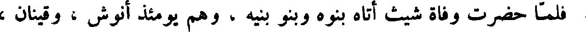
فلما حضرت وفاة شيث أتاه بنوه وبنو بنيه ، وهم يومئذ أنوش ، و قينان ،
File: 000101.gt.txt (if the image is defective, simply delete all Arabic text and the line will be excluded)

و مهلائيل ويرد ، واخنوخ ، ونساؤهم وأبناؤهم ، فصلى عليهم ، ودعا لهم
File: 000102.gt.txt (if the image is defective, simply delete all Arabic text and the line will be excluded)

بالبركة ، وتقدم إليهم ، وحلفهم بدم هابيل ألا يهبط أحد منهم من هذا الجبل
File: 000103.gt.txt (if the image is defective, simply delete all Arabic text and the line will be excluded)
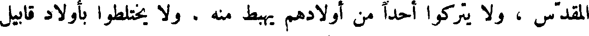
المقدس ، و لا يتركوا أحدا من أولادهم يهبط منه . و لا يختلطوا بأولاد قابيل
File: 000104.gt.txt (if the image is defective, simply delete all Arabic text and the line will be excluded)

الملعون ، وأوصى إلى انوش ابنه ، وأمره أن يحتفظ في بجسد آدم ، وأن يتقي الله ،
File: 000105.gt.txt (if the image is defective, simply delete all Arabic text and the line will be excluded)

ويأمر قومه بتقوي الله وحسن العبادة ، ثم توفي يوم الثلاثاء لسبع وعشرين ليلة
File: 000106.gt.txt (if the image is defective, simply delete all Arabic text and the line will be excluded)

خلت من آب على ثلاث ساعات من النهار ، وكانت حياته تسعمائة وأثنتي عشرة
File: 000107.gt.txt (if the image is defective, simply delete all Arabic text and the line will be excluded)

انوش بن شيث
File: 000108.gt.txt (if the image is defective, simply delete all Arabic text and the line will be excluded)

سنة .
File: 000109.gt.txt (if the image is defective, simply delete all Arabic text and the line will be excluded)
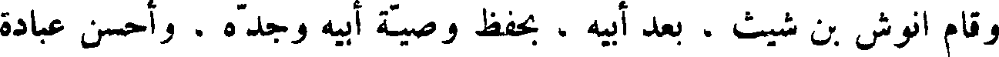
وقام انوش بن شيث ، بعد أبيه ، بحفظ وصية أبيه وجده . وأحسن عبادة
File: 000110.gt.txt (if the image is defective, simply delete all Arabic text and the line will be excluded)
الله ، وأمر قومه بحسن العبادة ، وفي أيامه قتل قابيل الملعون ، رماه لمك الأعمى
File: 000111.gt.txt (if the image is defective, simply delete all Arabic text and the line will be excluded)

بحجر ، فشدخ رأسه ، فمات. وكان قد ولد لأنوش قينان بعد أن أتت له تسعون سنة.
File: 000112.gt.txt (if the image is defective, simply delete all Arabic text and the line will be excluded)

الأصنام ، وكان ملكه خمسا وخمسين سنة ، وأيام أسره عشرين سنه .
File: 000113.gt.txt (if the image is defective, simply delete all Arabic text and the line will be excluded)

ثم ملك امون بن منشا ، فأعاد الأصنام حتى كثرت ، وكان ملكه ست
File: 000114.gt.txt (if the image is defective, simply delete all Arabic text and the line will be excluded)

عشرة سنة .
File: 000115.gt.txt (if the image is defective, simply delete all Arabic text and the line will be excluded)

ثم ملك بعده يوشيا ابنه ، فأحسن عبادة الله ، تعالى وكسر الأصنام ، وهدم بيوتها
File: 000116.gt.txt (if the image is defective, simply delete all Arabic text and the line will be excluded)

وقتل سدنتها واحرقهم ، وكان في العدل وحسن عبادة الله وجميل مذهبه
File: 000117.gt.txt (if the image is defective, simply delete all Arabic text and the line will be excluded)

يشبه داود وسليمان ، وكان ملكه ثلاثين سنة .
File: 000118.gt.txt (if the image is defective, simply delete all Arabic text and the line will be excluded)

ثم ملك يهواخز ابنه ثلاثة أشهر ، ثم أسره فرعون الأعرج ملك مصر ،
File: 000119.gt.txt (if the image is defective, simply delete all Arabic text and the line will be excluded)

ووضع على بلاده الخراج ، وصير عليها ملكا من قبله ، وأخذ يهواخز ، فذهب
File: 000120.gt.txt (if the image is defective, simply delete all Arabic text and the line will be excluded)

به إلي مصر فمات هناك .
File: 000121.gt.txt (if the image is defective, simply delete all Arabic text and the line will be excluded)

ثم ملك بعده يوقيم أخوه ، وهو أبو دانيال النبي ، وفي عصره سار بخت
File: 000122.gt.txt (if the image is defective, simply delete all Arabic text and the line will be excluded)

نصر ملك بابل ألي بيت المقدس ، فقتل في بني إسرائيل ، وسباهم ، وحملهم
File: 000123.gt.txt (if the image is defective, simply delete all Arabic text and the line will be excluded)

إلى أرض بابل ، ثم صار إلى أرض مصر ، فقتل فرعون الأعرج ملكها .
File: 000124.gt.txt (if the image is defective, simply delete all Arabic text and the line will be excluded)

وأخذ بخت نصر التوراة ، وما كان في الهيكل من كتب الأنبياء ، فصيرها
File: 000125.gt.txt (if the image is defective, simply delete all Arabic text and the line will be excluded)

في بئر وطرح عليها النار ، وكبسها . وكان في ذلك العصر ارميا النبي ، فلما
File: 000126.gt.txt (if the image is defective, simply delete all Arabic text and the line will be excluded)

علم بقدوم بخت نصر ، أخذ تابوت السكينة ، فخبأه في مغارة حيث لم يعلم به
File: 000127.gt.txt (if the image is defective, simply delete all Arabic text and the line will be excluded)

أحد ، ولم ينج من بخت نصر إلا أرميا .
File: 000128.gt.txt (if the image is defective, simply delete all Arabic text and the line will be excluded)

وكان عدة من حمل بخت نصر إلى أرض بابل ثمانية عشر ألفاً ، فيهم
File: 000129.gt.txt (if the image is defective, simply delete all Arabic text and the line will be excluded)

ألف نبي ، وملكهم يحينا بن بأن يهوياقيم ، فمنهم اليهود الذين بالعراق ، ويقال
File: 000130.gt.txt (if the image is defective, simply delete all Arabic text and the line will be excluded)

إن ارميا النبي قال : اللهم ! إني لأعلم من عدلك ما لا يعلمه غيري ، فعلام
File: 000131.gt.txt (if the image is defective, simply delete all Arabic text and the line will be excluded)

سلطت بخت نصر على بني إسرائيل ؟ فأوحى الله أليه : أني إنما انتقم من عبادي ،
File: 000132.gt.txt (if the image is defective, simply delete all Arabic text and the line will be excluded)

إذا عصوني ، بشرار خلقي .
File: 000133.gt.txt (if the image is defective, simply delete all Arabic text and the line will be excluded)

ولم يزل بنو إسرائيل في الأسر تحت يد بخت نصر حتى تزوج امرأة منهم
File: 000134.gt.txt (if the image is defective, simply delete all Arabic text and the line will be excluded)

يقال لها ملحات زربابل ، بنت سلتائيل ، فسألته إن يرد قومها إلى بلدهم ،
File: 000135.gt.txt (if the image is defective, simply delete all Arabic text and the line will be excluded)

فلما رجع بنو إسرائيل إلى بلدهم ملكوا عليهم زربالبل بن سلتائيل ، فبنى مدينة
File: 000136.gt.txt (if the image is defective, simply delete all Arabic text and the line will be excluded)

الترك والخزر ، وولد ماشج الاشبان ، وولد مأجوج يأجوج ومأجوج ، وهم
File: 000137.gt.txt (if the image is defective, simply delete all Arabic text and the line will be excluded)

في شرقي الأرض من جهة الترك ، وكانت منازل الصقالبة وبرجان أرض الروم ،
File: 000138.gt.txt (if the image is defective, simply delete all Arabic text and the line will be excluded)

قبل أن يكون الروم ، فهؤلاء ولد يافث .
File: 000139.gt.txt (if the image is defective, simply delete all Arabic text and the line will be excluded)
وعاش نوح ، بعد خروجه من السفينة ، ثلاثمائة وستين سنة ، ولما حضرت
File: 000140.gt.txt (if the image is defective, simply delete all Arabic text and the line will be excluded)

وفاة نوح اجتمع إليه بنوه الثلاثة سام وحام ويافث وبنوهم ، فأوصاهم ، وأمرهم
File: 000141.gt.txt (if the image is defective, simply delete all Arabic text and the line will be excluded)

بعبادة الله تعالى ، وأمر ساماً أن يدخل السفينة ، إذا مات ، و لا يشعر به أحد ،
File: 000142.gt.txt (if the image is defective, simply delete all Arabic text and the line will be excluded)

فيستخرج جسد آدم ، ويذهب معه بملكيز دق بن لمك بن سام ، فإن الله اختاره
File: 000143.gt.txt (if the image is defective, simply delete all Arabic text and the line will be excluded)
ليكون مع جسد آدم في وسط الأرض في المكان المقدس وقال له يا سام !
File: 000144.gt.txt (if the image is defective, simply delete all Arabic text and the line will be excluded)
انك إذا خرجت أنت وملكيز دق بعث الله معكما ملكا من الملائكة يدلكما على
File: 000145.gt.txt (if the image is defective, simply delete all Arabic text and the line will be excluded)

الطريق ، ويريكما وسط الأرض ، ولا تعلمن أحدا ما تصنع ، فإن هذا الأمر
File: 000146.gt.txt (if the image is defective, simply delete all Arabic text and the line will be excluded)

وصية آدم التي أوصى بها بنيه ، وأوصى بها بعضهم بعضا ، حتى انتهى ذلك
File: 000147.gt.txt (if the image is defective, simply delete all Arabic text and the line will be excluded)

إليك ، فإذا بلغتما المكان الذي يريكما الملك ، فضع فيه جسد آدم ، ثم مر
File: 000148.gt.txt (if the image is defective, simply delete all Arabic text and the line will be excluded)
ملكيز دق ألا يفارقه ، ولا يكون له عمل إلا عبادة الله ، سبحانه وتعالى ، وأمره
File: 000149.gt.txt (if the image is defective, simply delete all Arabic text and the line will be excluded)

أن لا ينكح امرأة ، ولا يبني بنيانا ، ولا يهريق دما ، ولا يلبس ثوبا ، إلا من
File: 000150.gt.txt (if the image is defective, simply delete all Arabic text and the line will be excluded)

جلود الوحوش ، ولا يقص شعرا ولا ظفرا ، وليجلس وحده ، وليكثر حمد الله ،
File: 000151.gt.txt (if the image is defective, simply delete all Arabic text and the line will be excluded)
ثم مات في أيار يوم الأربعاء ، وكانت حياته تسعمائة سنة وخمسين ، كما حكى الله
File: 000152.gt.txt (if the image is defective, simply delete all Arabic text and the line will be excluded)

تعالى ألف سنة إلا خمسين عاما .
File: 000153.gt.txt (if the image is defective, simply delete all Arabic text and the line will be excluded)

وتفرقوا على اثنتين وسبعين فرقة من موضعهم ذلك ، فكان في ولد سام تسع
File: 000154.gt.txt (if the image is defective, simply delete all Arabic text and the line will be excluded)

عشر لسانا ، وفي ولود حام ست عشرة لسانا ، وفي ولد يافث سبعة وثلاثون لسانا ؛
File: 000155.gt.txt (if the image is defective, simply delete all Arabic text and the line will be excluded)

فلما رأوا ما هم فيه اجتمعوا إلى فالغ بن عابر فقال لهم : انه لا يسعكم أرض
File: 000156.gt.txt (if the image is defective, simply delete all Arabic text and the line will be excluded)

واحدة مع افتراق ألسنتكم ، فقالوا : اقسموا الأرض بيننا ، فقسم لهم فصار
File: 000157.gt.txt (if the image is defective, simply delete all Arabic text and the line will be excluded)

لولد يافث بن نوح الصين والهند والسند والترك والخزر والتبت والبلغر والديلم
File: 000158.gt.txt (if the image is defective, simply delete all Arabic text and the line will be excluded)

وما والى ارض خرا سان ، وكان ملك بني يافث في ذلك الزمان جم شاذ .
File: 000159.gt.txt (if the image is defective, simply delete all Arabic text and the line will be excluded)

وصار لولد حام أرض المغرب وما وراء الفرات إلى مسقط الشمس .
File: 000160.gt.txt (if the image is defective, simply delete all Arabic text and the line will be excluded)

وصار لولد سام الحجاز واليمن وباقي الأرض .
File: 000161.gt.txt (if the image is defective, simply delete all Arabic text and the line will be excluded)

وكان قد ولد له ارغو بعد أن أتت عليه ثلاثون سنة ، وحضرت فالغ الوفاة ،
File: 000162.gt.txt (if the image is defective, simply delete all Arabic text and the line will be excluded)
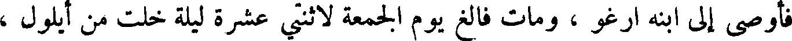
فأوصى إلى ابنه ارغو ، ومات فالغ يوم الجمعة لاثنتي عشرة ليلة خلت من أيلول ،
File: 000163.gt.txt (if the image is defective, simply delete all Arabic text and the line will be excluded)

وكانت حياته مائتي سنة وتسعا وثلاثين سنة .
File: 000164.gt.txt (if the image is defective, simply delete all Arabic text and the line will be excluded)

ارغو بن فالغ
File: 000165.gt.txt (if the image is defective, simply delete all Arabic text and the line will be excluded)

ثم قال ارغو بن فالغ بعد أبيه ، وقد تفرقت الألسن على اثنتين وسبعين فرقة ،
File: 000166.gt.txt (if the image is defective, simply delete all Arabic text and the line will be excluded)

لبني سام تسعة عشرة فرقة ، ولود حام ست عشرة فرقة ، ولولد يافث سبع
File: 000167.gt.txt (if the image is defective, simply delete all Arabic text and the line will be excluded)
وثلاثون ، وكان في زمانه نمرود الجبار ، وكان مسكنه ببابل ، وكان الذي ابتدأ
File: 000168.gt.txt (if the image is defective, simply delete all Arabic text and the line will be excluded)

بناء الصرح ، وأول من عمل التاج ، وملك سبعا وستين سنة .
File: 000169.gt.txt (if the image is defective, simply delete all Arabic text and the line will be excluded)

وكان قد ولد لارغو ساروغ ، بعد أن أتت عليه اثنتان وثلاثون سنة ، ولما
File: 000170.gt.txt (if the image is defective, simply delete all Arabic text and the line will be excluded)

أتت لأرغو أربع وسبعون سنة من عمره كمل الألف الثالث .
File: 000171.gt.txt (if the image is defective, simply delete all Arabic text and the line will be excluded)

وحضرت أرغو الوفاة ، فأوصى ابنه ساروغ ، وتوفي أرغو يوم الأربعاء
File: 000172.gt.txt (if the image is defective, simply delete all Arabic text and the line will be excluded)

لأربع عشرة ليلة خلت من نيسان ، وكانت حياته مائتي سنة .
File: 000173.gt.txt (if the image is defective, simply delete all Arabic text and the line will be excluded)

رحبعم بن سليمان والملوك بعده
File: 000174.gt.txt (if the image is defective, simply delete all Arabic text and the line will be excluded)
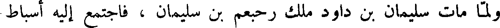
ولما مات سليمان بن داود ملك رحبعم بن سليمان ، فاجتمع إليه أسباط
File: 000175.gt.txt (if the image is defective, simply delete all Arabic text and the line will be excluded)

بني إسرائيل ، وقالوا له : إن أباك قد كان غلظ علينا ، واستعبدنا استعبادا
File: 000176.gt.txt (if the image is defective, simply delete all Arabic text and the line will be excluded)

شديدا ، فخفف أنت الآن عنا ! فقال لهم رحبعم : انصرفوا عني اليوم وجيئوني
File: 000177.gt.txt (if the image is defective, simply delete all Arabic text and the line will be excluded)

بعد ثلاثة أيام ، فانصرفوا عنه ،فاستشار المشيخة من أصحاب أبيه ، فقال : ما
File: 000178.gt.txt (if the image is defective, simply delete all Arabic text and the line will be excluded)

فقالوا له : نرى أن تغلظ القول لهم ليستقيم لك أمرهم ، كما استقام لأبيك .
File: 000179.gt.txt (if the image is defective, simply delete all Arabic text and the line will be excluded)

فلما كان اليوم الثالث اجتمعوا إليه ليسألوه عما ذكروا له ، فقال لهم :
File: 000180.gt.txt (if the image is defective, simply delete all Arabic text and the line will be excluded)

إن خنصري اثقل من إبهام أبى . فلما قال لهم هذا انصرفوا عنه ، وتفرقوا في
File: 000181.gt.txt (if the image is defective, simply delete all Arabic text and the line will be excluded)

قراهم ، فلم يبق معه من أسباط بني إسرائيل إلا سبط يهوذا وسبط بنيامين .
File: 000182.gt.txt (if the image is defective, simply delete all Arabic text and the line will be excluded)

وملكت الأسباط العشرة عليهم يوربعم بن ناباط ، وكان قد هرب من سليمان
File: 000183.gt.txt (if the image is defective, simply delete all Arabic text and the line will be excluded)

إلي مصر ، فلما اختلفت بنو إسرائيل على رحبعم بن سليمان قدم ، وجمع رحبعم
File: 000184.gt.txt (if the image is defective, simply delete all Arabic text and the line will be excluded)

بن سليمان من سبط يهوذا ، وسبط بنيامين ، ألف رجل يطلب محاربة يوربعم
File: 000185.gt.txt (if the image is defective, simply delete all Arabic text and the line will be excluded)
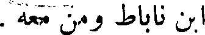
ابن ناباط ومن معه .
File: 000186.gt.txt (if the image is defective, simply delete all Arabic text and the line will be excluded)

وأوحى الله إلى سمعيا النبي أن قل لرحبعم ومن معه : لا تحاربوا بني
File: 000187.gt.txt (if the image is defective, simply delete all Arabic text and the line will be excluded)

إسرائيل ! فسمعوا قوله ، وانصرفوا ، وكان ملك رحبعم سبع عشرة سنة .
File: 000188.gt.txt (if the image is defective, simply delete all Arabic text and the line will be excluded)

وملك يوربعم بن ناباط على العشرة الأسباط من جبل فاران ، فقالت بنو
File: 000189.gt.txt (if the image is defective, simply delete all Arabic text and the line will be excluded)

إسرائيل : إنا نريد أن نقرب قرابيننا إلي الله ، فكره يوربعم أن يصعدوا إلي
File: 000190.gt.txt (if the image is defective, simply delete all Arabic text and the line will be excluded)

بيت المقدس ، فسيتميلهم يلهم آل يهوذا ، فيدخلوا في ملكهم ، فقال : ليست
File: 000191.gt.txt (if the image is defective, simply delete all Arabic text and the line will be excluded)

بكم حاجة ألي الصعود ، وأنا اعمل لكم مذبحا ، فعمل لهم مذبحا ، وصير فيه
File: 000192.gt.txt (if the image is defective, simply delete all Arabic text and the line will be excluded)

أنا ابرز إليه ! فقال لداود انطلق ، والرب يكون معك ! فأخذ عصا وخمسة
File: 000193.gt.txt (if the image is defective, simply delete all Arabic text and the line will be excluded)

أحجار ، وخرج إلى غلياث ، فلما رآه احتقره ، فقال له : إلى كلب خرجت
File: 000194.gt.txt (if the image is defective, simply delete all Arabic text and the line will be excluded)

بعصا وحجر ؟ فقال له : إلى اشد من الكلب ، ثم اخذ حجرا من مخلاته
File: 000195.gt.txt (if the image is defective, simply delete all Arabic text and the line will be excluded)

ورماه به حتى غاب الحجر في جبهة جالوت ، وسقط ، فسعى إليه داود ، فأخذ
File: 000196.gt.txt (if the image is defective, simply delete all Arabic text and the line will be excluded)

سيفه ، وحز رأسه ، واخذ راجعا ، فانهزم عسكر غلياث ، واشتد سرور بني
File: 000197.gt.txt (if the image is defective, simply delete all Arabic text and the line will be excluded)

يهوذا ، فاغتم شاول وحسد داود ، فطرده عنه ، وصيره رئيسا على ألف ، ونفاه
File: 000198.gt.txt (if the image is defective, simply delete all Arabic text and the line will be excluded)

بمكان بني يهوذا ، وتزوج ميخل بنت شاول .
File: 000199.gt.txt (if the image is defective, simply delete all Arabic text and the line will be excluded)

وكان شاول يريد قتل داود ، فكان يوجهه يقاتل الحنفاء عبدة النجوم ،
File: 000200.gt.txt (if the image is defective, simply delete all Arabic text and the line will be excluded)

فيفتح الله عليه ، فهم أن يقتله بغير حيلة ، فهرب داود ، فجاء إلى شمويل النبي ،
File: 000201.gt.txt (if the image is defective, simply delete all Arabic text and the line will be excluded)

فخبره بخبر شاول ، ولم يزل شاول يحاول قتل داود حتى هرب ، فمر باخيش
File: 000202.gt.txt (if the image is defective, simply delete all Arabic text and the line will be excluded)

ملك جات ، فلما رآه عرفه ، فتحيل عليه داود حتى أطلقه ، فصار إلى سارع ، فنزلها.
File: 000203.gt.txt (if the image is defective, simply delete all Arabic text and the line will be excluded)

ولما علم شاول انه قد فاته قتل الكهنة الذين كانوا يقدسون ، وقال : قد
File: 000204.gt.txt (if the image is defective, simply delete all Arabic text and the line will be excluded)
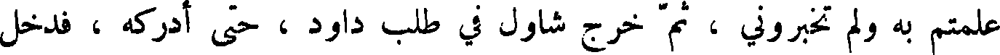
علمتم به ولم تخبروني ، ثم خرج شاول في طلب داود ، حتى أدركه ، فدخل
File: 000205.gt.txt (if the image is defective, simply delete all Arabic text and the line will be excluded)

داود مغارة ، فلما صار شاول عند المغارة نزل لحاجته ، فدخل المغارة ، وهو
File: 000206.gt.txt (if the image is defective, simply delete all Arabic text and the line will be excluded)

لا يعلم أن داود فيها ، فقام داود ، فتوارى ، فقال له أصحابه : يا داود اقتله !
File: 000207.gt.txt (if the image is defective, simply delete all Arabic text and the line will be excluded)
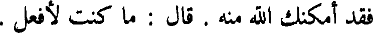
فقد أمكنك الله منه . قال : ما كنت لأفعل .
File: 000208.gt.txt (if the image is defective, simply delete all Arabic text and the line will be excluded)
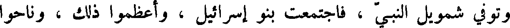
وتوفي شمويل النبي ، فاجتمعت بني إسرائيل ، واعظموا ذلك ، وناحوا
File: 000209.gt.txt (if the image is defective, simply delete all Arabic text and the line will be excluded)

عليه ثلاثين يوما .
File: 000210.gt.txt (if the image is defective, simply delete all Arabic text and the line will be excluded)

وخرج شاول يقاتل الحنفاء ، والتحم القتال بينهم ، فهزموا بني إسرائيل ،
File: 000211.gt.txt (if the image is defective, simply delete all Arabic text and the line will be excluded)
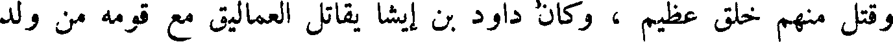
وقتل منهم خلق عظيم ، وكان داود بن ايشا يقاتل العماليق مع قومه من ولد
File: 000212.gt.txt (if the image is defective, simply delete all Arabic text and the line will be excluded)
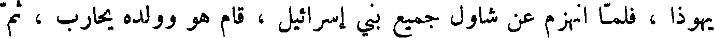
يهوذا ، فلما انهزم عن شاول جميع بني إسرائيل ، قام هو وولده يحارب ، ثم
File: 000213.gt.txt (if the image is defective, simply delete all Arabic text and the line will be excluded)

قال لصاحبه الذي يحمل سلاحه : خذ سيفك فاقتلني به لئلا يقتلني هؤلاء القلف،
File: 000214.gt.txt (if the image is defective, simply delete all Arabic text and the line will be excluded)

ويلعبوا بي، فلم يفعل، فأخذ شاول سيفه، فأقامه ، ثم ألقى نفسه عليه ، فمات ،
File: 000215.gt.txt (if the image is defective, simply delete all Arabic text and the line will be excluded)

و قتل أولاده الثلاثة ، وكان ملك شاول أربعين سنة .
File: 000216.gt.txt (if the image is defective, simply delete all Arabic text and the line will be excluded)

إذ قال له بعض الصيادين : تعال يا مجنون ، فخذ هذا الحوت ! فأعطاه حوتا قد
File: 000217.gt.txt (if the image is defective, simply delete all Arabic text and the line will be excluded)

تغيرت رائحته ، فصار به إلى البحر ، فغسله ، وشق بطنه ، وإذا في داخله حوت
File: 000218.gt.txt (if the image is defective, simply delete all Arabic text and the line will be excluded)

آخر ، فشق بطن الحوت الآخر ، فإذا خاتمه في جوفه ، فلبسه ، وحمد الله ،
File: 000219.gt.txt (if the image is defective, simply delete all Arabic text and the line will be excluded)

ورد الله عليه ملكه .
File: 000220.gt.txt (if the image is defective, simply delete all Arabic text and the line will be excluded)

وأقام ملكا على بني إسرائيل ، وعلى ما وصف الله ، جل وعز ، من ملكه ،
File: 000221.gt.txt (if the image is defective, simply delete all Arabic text and the line will be excluded)

و تسخيره له الطير والجن والإنس يعملون له أعاجيب الصنعة ، ويشيدون له
File: 000222.gt.txt (if the image is defective, simply delete all Arabic text and the line will be excluded)

البنيان ، ويطيعونه في كل أمره ، أربعين سنة ، ثم توفي ، ودفن إلى جانب قبر
File: 000223.gt.txt (if the image is defective, simply delete all Arabic text and the line will be excluded)

داود ؛ وكان لسليمان يوم ملك اثنتا عشرة سنة ، فمات وله اثنتان وخمسون سنة .
File: 000224.gt.txt (if the image is defective, simply delete all Arabic text and the line will be excluded)
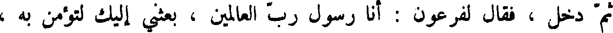
ثم دخل ، فقال لفرعون : أنا رسول رب العالمين ، بكثني إليك لتؤمن به ،
File: 000225.gt.txt (if the image is defective, simply delete all Arabic text and the line will be excluded)

وتبعث معي بني إسرائيل . فأعظم فرعون ذلك ، فقال له : إيت بآية نعلم بها
File: 000226.gt.txt (if the image is defective, simply delete all Arabic text and the line will be excluded)

صدقك ! فألقى عصاه ، فإذا هي ثعبان عظيم قد فتح فاه ، وأهوى نحو فرعون ،
File: 000227.gt.txt (if the image is defective, simply delete all Arabic text and the line will be excluded)

فسأل موسى أن ينحيه عنه ، ثم أدخل يده في جيبه وأخرجها بيضاء من غير
File: 000228.gt.txt (if the image is defective, simply delete all Arabic text and the line will be excluded)

سوء برص .
File: 000229.gt.txt (if the image is defective, simply delete all Arabic text and the line will be excluded)

وكان فرعون أراد أن يصدقه ، فقال له هامان : أما في عبيدك أيها الملك ،
File: 000230.gt.txt (if the image is defective, simply delete all Arabic text and the line will be excluded)

من يعمل مثل هذا ؟ فأحضر السحرة من جميع البلاد ، وخبروا بخبر موسى ،
File: 000231.gt.txt (if the image is defective, simply delete all Arabic text and the line will be excluded)

فأقاموا حينا يعملون من جلود البقر حبالا مجوفة وعصيا مجوفة ، ويزوقونها ،
File: 000232.gt.txt (if the image is defective, simply delete all Arabic text and the line will be excluded)
ويصيرون فيها الزيبق ، ثم احموا المواضع التي أرادوا أن يلقوا فيها الحبال
File: 000233.gt.txt (if the image is defective, simply delete all Arabic text and the line will be excluded)

والعصي ، ثم جلس فرعون ، واحضره ، فألقى السحرة حبالهم وعصيتهم ،
File: 000234.gt.txt (if the image is defective, simply delete all Arabic text and the line will be excluded)

فلما حمي الزئبق تحرك ، ومشت الحبال والعصي ، فألقى موسى عصاه ، فأكلت
File: 000235.gt.txt (if the image is defective, simply delete all Arabic text and the line will be excluded)

ذلك كله ، حتى لم يبقى منه شيء ، ونكص السحرة ، فقتل فرعون من قتل منهم .
File: 000236.gt.txt (if the image is defective, simply delete all Arabic text and the line will be excluded)

وبعث الله موسى بآيات إلى فرعون : العصا ، ثم اليد التي خرجت من
File: 000237.gt.txt (if the image is defective, simply delete all Arabic text and the line will be excluded)

جيبه بيضاء ، ثم الجراد ، ثم القمل ، ثم الضفادع ، ثم الدم وموت الأبكار ،
File: 000238.gt.txt (if the image is defective, simply delete all Arabic text and the line will be excluded)

فلما اتصل بهم هذا قال له فرعون : إن كشفت عنا الرجز آمنا أخرجنا معك
File: 000239.gt.txt (if the image is defective, simply delete all Arabic text and the line will be excluded)

بني إسرائيل . فكشف الله عنهم ، ولم يؤمنوا .
File: 000240.gt.txt (if the image is defective, simply delete all Arabic text and the line will be excluded)

وأمر الله موسى أن يخرج بني إسرائيل فلما أرادوا الخروج طلب جسد
File: 000241.gt.txt (if the image is defective, simply delete all Arabic text and the line will be excluded)

يوسف بن يعقوب ليحمله معه ، كما أوصى يوسف بني إسرائيل ، فاتته شارح
File: 000242.gt.txt (if the image is defective, simply delete all Arabic text and the line will be excluded)

بنت آشر بن يعقوب ، فقالت : تضمن لي البقاء حتى أدلك عليه ؟ حتى ضمن ذلك
File: 000243.gt.txt (if the image is defective, simply delete all Arabic text and the line will be excluded)

لها فصارت به إلى موضع من النيل ، فقالت له: هو ها هنا ! فأخذ موسى أربع
File: 000244.gt.txt (if the image is defective, simply delete all Arabic text and the line will be excluded)
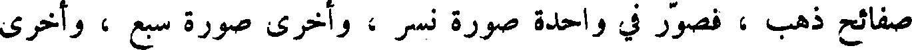
صفائح ذهب ، فصور في واحدة صور نسر ، وأخرى صورة سبع ، وأخرى
File: 000245.gt.txt (if the image is defective, simply delete all Arabic text and the line will be excluded)

صورة إنسان ، وأخرى صورة ثور ، وكتب في كل صفيحة اسم الله الأعظم ،
File: 000246.gt.txt (if the image is defective, simply delete all Arabic text and the line will be excluded)

وألقاها في الماء ، فطفا تابوت الحجارة الذي كان فيه جسد يوسف ، وبقيت
File: 000247.gt.txt (if the image is defective, simply delete all Arabic text and the line will be excluded)

في يد موسى صفيحة واحدة فيها صورة ثور ، فوهبها لشارح بنت آشر ،
File: 000248.gt.txt (if the image is defective, simply delete all Arabic text and the line will be excluded)

لهم ، وقال لكل واحد منهم قولا ، وأعطى ليوسف سيفه وقوسه .
File: 000249.gt.txt (if the image is defective, simply delete all Arabic text and the line will be excluded)

وقرب إليه يوسف ابنيه منشى وافرائيم ، فصير منشى عن يمينه وافرائيم
File: 000250.gt.txt (if the image is defective, simply delete all Arabic text and the line will be excluded)

عن شماله ، لأن منشى كان اكبر ، فقلب يده اليمنى على افرائيم ، واصى
File: 000251.gt.txt (if the image is defective, simply delete all Arabic text and the line will be excluded)

يوسف أن يحمله ويدفنه إلى جنب قبر إبراهيم وإسحاق .
File: 000252.gt.txt (if the image is defective, simply delete all Arabic text and the line will be excluded)

ولما توفي يعقوب قاموا يبكون عليه سبعين يوما ، ثم حمله يوسف ، واخرج
File: 000253.gt.txt (if the image is defective, simply delete all Arabic text and the line will be excluded)

معه غلمانا من أهل مصر ، وصار به إلى ارض فلسطين ، فدفنه إلى جنب قبر
File: 000254.gt.txt (if the image is defective, simply delete all Arabic text and the line will be excluded)

إبراهيم وإسحاق .
File: 000255.gt.txt (if the image is defective, simply delete all Arabic text and the line will be excluded)

ولما فرغوا من دفن يعقوب قال لاخوته : ارجعوا معي إلى ارض مصر !
File: 000256.gt.txt (if the image is defective, simply delete all Arabic text and the line will be excluded)

فخافوه ، فقالوا له : قد أوصاك أبوك يعقوب أن تغفر خطيئتنا . قال : لا تخشوني !
File: 000257.gt.txt (if the image is defective, simply delete all Arabic text and the line will be excluded)

فأني أخشى الله . فاطمأنت قلوبهم ، فرجعوا إلى أرض مصر ، فألقموا بها .
File: 000258.gt.txt (if the image is defective, simply delete all Arabic text and the line will be excluded)

وعاش يوسف بمصر دهرا ، ثم حضرته الوفاة ، فجمع بني إسرائيل ،
File: 000259.gt.txt (if the image is defective, simply delete all Arabic text and the line will be excluded)

وقال : أنكم تخرجون بعد حين من ارض مصر ، إذا بعث الله رجلا يقال له
File: 000260.gt.txt (if the image is defective, simply delete all Arabic text and the line will be excluded)

موسى بن عمران من ولد لاوي بن يعقوب ، وسيذكركم الله ، ويرفعكم ،
File: 000261.gt.txt (if the image is defective, simply delete all Arabic text and the line will be excluded)

فأخرجوا بدني من هذه الأرض ، حتى تدفنوني عند قبور آبائي .
File: 000262.gt.txt (if the image is defective, simply delete all Arabic text and the line will be excluded)

ومات يوسف وله مائة وعشر سنين ، فصير في تابوت حجارة ، وصير
File: 000263.gt.txt (if the image is defective, simply delete all Arabic text and the line will be excluded)

في النيل .
File: 000264.gt.txt (if the image is defective, simply delete all Arabic text and the line will be excluded)

وكان في ذلك العصر أيوب النبي ابن اموص بن زارح بن رعوئيل بن عيصو
File: 000265.gt.txt (if the image is defective, simply delete all Arabic text and the line will be excluded)

ابن إسحاق بن إبراهيم ، وكان كثير المال ، فابتلاه الله تعالى بخطيئة أخطأها ،
File: 000266.gt.txt (if the image is defective, simply delete all Arabic text and the line will be excluded)

فشكر الله وصبر ، ثم رفع الله عنه البلاء ، ورد إليه ماله وأضعف له .
File: 000267.gt.txt (if the image is defective, simply delete all Arabic text and the line will be excluded)

ففعلت هذا ، فلأنتقمن منك بشر ولدك ، ولأ سلطنه عليك وعلى نسائك !
File: 000268.gt.txt (if the image is defective, simply delete all Arabic text and the line will be excluded)

فعظم ذلك على داود ، فقال له ناتان : أن الله قد تجاوز عن سبيلك ، فلن تموت ،
File: 000269.gt.txt (if the image is defective, simply delete all Arabic text and the line will be excluded)

ولكنه ينتقم منك بشر بنيك ، وأعلمه الله أن ولده الذي ولدته المرأة يموت ،
File: 000270.gt.txt (if the image is defective, simply delete all Arabic text and the line will be excluded)

فجزع داود ، واشتد جزعه ، واشتكى الصبي ، فلما اشتدت علته صام وقام
File: 000271.gt.txt (if the image is defective, simply delete all Arabic text and the line will be excluded)

ليصلي ويبكي ، ويتمرغ بالشعر على الأرض ، فلما توفي الصبي اعظم خول
File: 000272.gt.txt (if the image is defective, simply delete all Arabic text and the line will be excluded)

داود أن يخبروه ، بذلك حتى سمع بوشوشتهم ، فعلم ، فغسل وجهه ، ولبس
File: 000273.gt.txt (if the image is defective, simply delete all Arabic text and the line will be excluded)

ثيابه ، وجلس في مجلسه، ودعا بطعامه، وقال : إنما كنت احزن قبل أن يهلك،
File: 000274.gt.txt (if the image is defective, simply delete all Arabic text and the line will be excluded)

فأما الساعة ، فأن خزني لا يرده إلي بل أنا اذهب إليه . ثم واقع برسبا ، فحملت
File: 000275.gt.txt (if the image is defective, simply delete all Arabic text and the line will be excluded)

غلاما ، فسماه سليمان .
File: 000276.gt.txt (if the image is defective, simply delete all Arabic text and the line will be excluded)

ثم إن ابيشالوم ببن داود قتل أخاه امنون ، وذلك انه اتهمه بأخت له من
File: 000277.gt.txt (if the image is defective, simply delete all Arabic text and the line will be excluded)

أمه ، فقتله ، وخرج على داود . وكان ابيشالوم عظيم الجسم ، كثير الشعر ،
File: 000278.gt.txt (if the image is defective, simply delete all Arabic text and the line will be excluded)

فبعث إليه داود من رده حتى رجع ، ثم خرج عليه ثانية ، فهرب منه داود
File: 000279.gt.txt (if the image is defective, simply delete all Arabic text and the line will be excluded)

ماشيا على رجليه ، حتى صعد عقبة طور سينا ، وبلغ منه الجوع حتى لحقه رجل
File: 000280.gt.txt (if the image is defective, simply delete all Arabic text and the line will be excluded)

معه خبز وزيت ، فأكل منه ؛ ودخل ابيشالوم مدينة أبيه ، وصار إلى داره
File: 000281.gt.txt (if the image is defective, simply delete all Arabic text and the line will be excluded)

واخذ سراري أبيه ، فوطئعمن ، وقال : ملكني الله على بني إسرائيل ؛ وخرج
File: 000282.gt.txt (if the image is defective, simply delete all Arabic text and the line will be excluded)

ومعه اثنا عشر ألفا ، فطلب داود ليقتله ، فهرب داود حتى جاز نهر الأردن ،
File: 000283.gt.txt (if the image is defective, simply delete all Arabic text and the line will be excluded)

فلما جاز اجتمع إليه جماعة من أصحابه ولفيف من القرى ، فوجه يؤاب ولده
File: 000284.gt.txt (if the image is defective, simply delete all Arabic text and the line will be excluded)

ليحارب ابيشالوم ، وقال له : خذه لي حيا صحيحا ! فخرجوا ، فحاربوه ،
File: 000285.gt.txt (if the image is defective, simply delete all Arabic text and the line will be excluded)

وكان أبيشالوم على بغل ، فدخل تحت شجرة بطم ، فتعلق بها ، فاندقت عنقه ،
File: 000286.gt.txt (if the image is defective, simply delete all Arabic text and the line will be excluded)

ورماه يؤاب بثلاثة اسهم ، وطرحه في جب ، فلما أتى داود الخبر جزع بعليه
File: 000287.gt.txt (if the image is defective, simply delete all Arabic text and the line will be excluded)

جزعا شديدا ، ورجع داود إلى موضعه .
File: 000288.gt.txt (if the image is defective, simply delete all Arabic text and the line will be excluded)

وخرج على داود بعد ذلك أزلا ، ومعه جبابرة ، فحاربهم ، فقتلهم ،
File: 000289.gt.txt (if the image is defective, simply delete all Arabic text and the line will be excluded)

فلما قتلهم ، وأنقذه الله منهم ، قام يقدس الله ويسبحه ، فقال في تقديسه :
File: 000290.gt.txt (if the image is defective, simply delete all Arabic text and the line will be excluded)

إياك يا رب اعبد ، ولك أخلص محبي ، فانك قوتي وعدتي ، وملجأي
File: 000291.gt.txt (if the image is defective, simply delete all Arabic text and the line will be excluded)

أرفخشد بن سام
File: 000292.gt.txt (if the image is defective, simply delete all Arabic text and the line will be excluded)

ثم قام ارفخشد بن سام بعبادة الله تعالى وطاعته ، وكان قد ولد له شالح بعد
File: 000293.gt.txt (if the image is defective, simply delete all Arabic text and the line will be excluded)

أن أتت عليه مائة وخمس وثمانون سنة ، وقد تفرق ولد نوح في البلاد ، وكثرت
File: 000294.gt.txt (if the image is defective, simply delete all Arabic text and the line will be excluded)

الجبابرة والعتاة منهم ، وافسد ولد كنعان بن حام ، واظهروا المعاصي.
File: 000295.gt.txt (if the image is defective, simply delete all Arabic text and the line will be excluded)

ولما حضرت ارفخشد الوفاة جمع إليه ولده وأهله وأوصاهم بعبادة الله تعالى
File: 000296.gt.txt (if the image is defective, simply delete all Arabic text and the line will be excluded)

ومجانبة المعاصي ، وقال لشالح ابنه : اقبل وصيتي ، وقم في اهلك بعدي عاملا
File: 000297.gt.txt (if the image is defective, simply delete all Arabic text and the line will be excluded)

بطاعة الله تعالى . ومات يوم الأحد لسبع بقين من نيسان ، وكانت حياته أربعمائة
File: 000298.gt.txt (if the image is defective, simply delete all Arabic text and the line will be excluded)

شالح بن ارفخشد
File: 000299.gt.txt (if the image is defective, simply delete all Arabic text and the line will be excluded)

وخمسا وستين سنة .
File: 000300.gt.txt (if the image is defective, simply delete all Arabic text and the line will be excluded)

ثم قام شالح بن ارفخشد في قومه يأمرهم بطاعة الله تعالى ، وينهاهم عن
File: 000301.gt.txt (if the image is defective, simply delete all Arabic text and the line will be excluded)

معاصيه ، ويحذرهم ما نال أهل المعاصي من الرجز والعذاب . وكان قد ولد
File: 000302.gt.txt (if the image is defective, simply delete all Arabic text and the line will be excluded)

له عابر بعد أن أتت عليه مائة وثلاثون سنة ، ثم حضرته الوفاة ، فأوصى إلى ابنه
File: 000303.gt.txt (if the image is defective, simply delete all Arabic text and the line will be excluded)
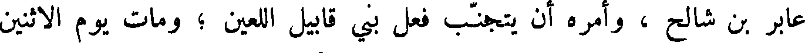
عابر بن شالح ، وأمره أن يتجنب فعل بني قابيل اللعين ؛ ومات يوم الاثنين
File: 000304.gt.txt (if the image is defective, simply delete all Arabic text and the line will be excluded)

لثلاث عشرة ليلة خلت من آذار ، وكانت حياته أربعمائة وثلاثين سنة .
File: 000305.gt.txt (if the image is defective, simply delete all Arabic text and the line will be excluded)

بالكرامة ويسبحون على أسرتهم ويكبرون على حناجرهم وسيف ذو
File: 000306.gt.txt (if the image is defective, simply delete all Arabic text and the line will be excluded)

شفيرتين بأيديهم ، لينتصروا على الشعوب ويتعظ الأمم فيوثقوا ملوكهم في
File: 000307.gt.txt (if the image is defective, simply delete all Arabic text and the line will be excluded)

القيود ، وذوي الكرامة بسلاسل من حديد ، ليفعل بهم القضاء الذي كتب ،
File: 000308.gt.txt (if the image is defective, simply delete all Arabic text and the line will be excluded)

والحمد لله لكل الصديقين .
File: 000309.gt.txt (if the image is defective, simply delete all Arabic text and the line will be excluded)

سبحوه في مقدسة ؛ سبحوه في سماء عزته ؛ سبحوه بحوله وقوته ؛
File: 000310.gt.txt (if the image is defective, simply delete all Arabic text and the line will be excluded)

سبحوه بعظمته ؛ سبحوه بصوت العزف ؛ سبحوه بالقيتار والكبر ، سبحوه
File: 000311.gt.txt (if the image is defective, simply delete all Arabic text and the line will be excluded)

بالبرابط والزمر ؛ سبحوه بالأوتار والكبر الطويل الخليلات ؛ سبحوه في صلاصل
File: 000312.gt.txt (if the image is defective, simply delete all Arabic text and the line will be excluded)

السمع ؛ سبحوه بالأصوات العلى والنداء ؛ سبحوا ربنا تسبيحا خالصا ، كل
File: 000313.gt.txt (if the image is defective, simply delete all Arabic text and the line will be excluded)

نفس بنفس .
File: 000314.gt.txt (if the image is defective, simply delete all Arabic text and the line will be excluded)

ثم يقول داود في آخر الزبور : أني كنت آخر اخوتي وعبد بيت أبي ،
File: 000315.gt.txt (if the image is defective, simply delete all Arabic text and the line will be excluded)

وكنت راعي غنم أبي ، ويدي تعمل الكبر ، وأصابعي تقص المزامير ، فمن ذا
File: 000316.gt.txt (if the image is defective, simply delete all Arabic text and the line will be excluded)

الذي حدث ربي عني ؟ هو ربي وهو الذي سمع مني وأرسل إلي ملائكته ،
File: 000317.gt.txt (if the image is defective, simply delete all Arabic text and the line will be excluded)

فانزعي من غنم أخوتي ، هم اكبر مني واحسن ، فلم يرضهم ربي ، فبعثي
File: 000318.gt.txt (if the image is defective, simply delete all Arabic text and the line will be excluded)

للقاء جنود جالوت ، فلما رايته يعبد أصنامه أعطاني النصر عليه ، فأخذت سيفه ،
File: 000319.gt.txt (if the image is defective, simply delete all Arabic text and the line will be excluded)

فقطعت رأسه .
File: 000320.gt.txt (if the image is defective, simply delete all Arabic text and the line will be excluded)
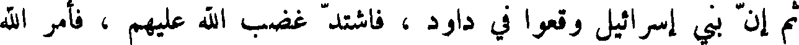
ثم إن بني إسرائيل وقعوا في داود فاشتد غضب الله عليهم فأمر الله
File: 000321.gt.txt (if the image is defective, simply delete all Arabic text and the line will be excluded)

داود أن يحصي عدد بني إسرائيل فأحصاهم فوجدهم ثماني مائة ألف رجل
File: 000322.gt.txt (if the image is defective, simply delete all Arabic text and the line will be excluded)

بطل ، وعدد بني يهوذا خمسمائة ألف رجل ، فبعث الله حيرام النبي إلى داود ،
File: 000323.gt.txt (if the image is defective, simply delete all Arabic text and the line will be excluded)

وقال له : قل لداود اختر واحدة من ثلاث : إما أن يكون جوع سبع سنين ،
File: 000324.gt.txt (if the image is defective, simply delete all Arabic text and the line will be excluded)

وإما أن تدفع إلى أعدائك فيعزونك ثلاثة اشهر ، ويطرحونك من سلطانك ،
File: 000325.gt.txt (if the image is defective, simply delete all Arabic text and the line will be excluded)
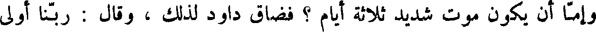
وإما أن يكون موت شديد ثلاثة أيام ؟ فضاق داود لذلك ، وقال : ربنا أولى
File: 000326.gt.txt (if the image is defective, simply delete all Arabic text and the line will be excluded)

بنا من خلقه ! فسلط الله عليهم الموت ، فمات في ساعة واحدة سبعون ألف
File: 000327.gt.txt (if the image is defective, simply delete all Arabic text and the line will be excluded)

رجل ، فقال داود : يا رب ! أني أنا أسأت ، فما ذنب هؤلاء الذين يشبهون
File: 000328.gt.txt (if the image is defective, simply delete all Arabic text and the line will be excluded)

البهائم ؟ فأوحى الله إليه : أن ابن لي هيكلا في بيدر اليبوساني ، فصعد داود
File: 000329.gt.txt (if the image is defective, simply delete all Arabic text and the line will be excluded)

ورأس بني كاذ اليسف بن دعوال ، وعدد من معه خمسة وأربعون ألفا
File: 000330.gt.txt (if the image is defective, simply delete all Arabic text and the line will be excluded)

وستمائة وخمسون رجلا .
File: 000331.gt.txt (if the image is defective, simply delete all Arabic text and the line will be excluded)

ورأس بني افرائيم اليشمع بن عميهوذ، وعدد من معه أربعون ألفا وخمسمائة
File: 000332.gt.txt (if the image is defective, simply delete all Arabic text and the line will be excluded)

رجل .
File: 000333.gt.txt (if the image is defective, simply delete all Arabic text and the line will be excluded)

ورأس بني منشا جعليال بن فداصور ، وعدد من معه اثنان وثلاثون ألفا
File: 000334.gt.txt (if the image is defective, simply delete all Arabic text and the line will be excluded)

ومائتا رجل .
File: 000335.gt.txt (if the image is defective, simply delete all Arabic text and the line will be excluded)

ورأس بني بنيامين ابيذان بن جذعوني ، وعدد من معه خمسة وستون ألفا
File: 000336.gt.txt (if the image is defective, simply delete all Arabic text and the line will be excluded)

وأربعمائة رجل .
File: 000337.gt.txt (if the image is defective, simply delete all Arabic text and the line will be excluded)

وراس بني دان اخيعازر بن عميشذاي ، وعدد من معه اثنان وثلاثون ألفا
File: 000338.gt.txt (if the image is defective, simply delete all Arabic text and the line will be excluded)

وسبعمائة رجل .
File: 000339.gt.txt (if the image is defective, simply delete all Arabic text and the line will be excluded)

ورأس بني آشر فجعيال بن عنحرن ، وعدد من معه أحد وأربعون ألفا
File: 000340.gt.txt (if the image is defective, simply delete all Arabic text and the line will be excluded)

وخمسمائة رجل .
File: 000341.gt.txt (if the image is defective, simply delete all Arabic text and the line will be excluded)

وراس سبط نفتالي اخيرع بن عينان ، وعدد من معه ثلاثة وخمسون ألفا
File: 000342.gt.txt (if the image is defective, simply delete all Arabic text and the line will be excluded)

وأربعمائة رجل .
File: 000343.gt.txt (if the image is defective, simply delete all Arabic text and the line will be excluded)

وكان بنو لاوي خدام قبة الزمان وحرسها ، فلم يدخلوا معهم ، وكانوا
File: 000344.gt.txt (if the image is defective, simply delete all Arabic text and the line will be excluded)

مخصوصين بالكرامة والقدس ، وخدمة قبة الزمان والتطهير ، فهذا عدد بني
File: 000345.gt.txt (if the image is defective, simply delete all Arabic text and the line will be excluded)

إسرائيل واسم رئيس كل سبط منهم ، وما كان معه من سبط على ما في السفر
File: 000346.gt.txt (if the image is defective, simply delete all Arabic text and the line will be excluded)
الرابع من التوراة .
File: 000347.gt.txt (if the image is defective, simply delete all Arabic text and the line will be excluded)

وأمر الله ، سبحانه ، موسى أن يقول لرؤساء أسباط بني إسرائيل أن
File: 000348.gt.txt (if the image is defective, simply delete all Arabic text and the line will be excluded)

يقرب كل عظيم منهم قربانا ، فكان قربان كل رجل منهم صحفة فجنة من
File: 000349.gt.txt (if the image is defective, simply delete all Arabic text and the line will be excluded)

مائة وثلاثين مثقالا ، ومصفاة فضة من سبعين مثقالا ، وملء الصحفة سميذ
File: 000350.gt.txt (if the image is defective, simply delete all Arabic text and the line will be excluded)

ملتوت بدهن، ومدهن ذهب من عشرة مثاقيل مملوءا طيبا، وثورا وكبشا، وحملا
File: 000351.gt.txt (if the image is defective, simply delete all Arabic text and the line will be excluded)

حوليا ، وحولية من المعزى. وكان الذبح الكامل ثورين وخمسة
File: 000352.gt.txt (if the image is defective, simply delete all Arabic text and the line will be excluded)

اكبش وخمسة جداء وخمسة حملان حولية .
File: 000353.gt.txt (if the image is defective, simply delete all Arabic text and the line will be excluded)

إبراهيم
File: 000354.gt.txt (if the image is defective, simply delete all Arabic text and the line will be excluded)

ونشأ إبراهيم في زمان نمرود الجبار ، فلما خرج من المغارة التي كان فيها
File: 000355.gt.txt (if the image is defective, simply delete all Arabic text and the line will be excluded)

قلب طرفه في السماء ، فنظر إلى الزهرة فرأى كوكبا مضيئا فقال هذا
File: 000356.gt.txt (if the image is defective, simply delete all Arabic text and the line will be excluded)

ربي فإن له علوا وارتفاعا ثم غاب الكوكب فقال إن ربي لا يغيب ،
File: 000357.gt.txt (if the image is defective, simply delete all Arabic text and the line will be excluded)

ثم رأى القمر لما طلع ، فقال هذا ربي فلم يلبث أن غاب القمر فقال :
File: 000358.gt.txt (if the image is defective, simply delete all Arabic text and the line will be excluded)

لئن لم يهدني ربي لأكونن من القوم الضالين،فلما جاء النهار طلعت الشمس،
File: 000359.gt.txt (if the image is defective, simply delete all Arabic text and the line will be excluded)

فقال هذا ربي، هذا أنور وأضوأ، فلما غابت الشمس قال : غابت ، وربي
File: 000360.gt.txt (if the image is defective, simply delete all Arabic text and the line will be excluded)

لا يغيب ، كما قص الله خبره وأمره ، فلما كملت سنة جعل يعجب إذ رأى
File: 000361.gt.txt (if the image is defective, simply delete all Arabic text and the line will be excluded)

قومه يعبدون الأصنام ، ويقول : أتعبدون ما تنحتون ؟ فيقولون : أبوك علمنا
File: 000362.gt.txt (if the image is defective, simply delete all Arabic text and the line will be excluded)

هذا . فيقول : إن أبي لمن الضالين ! فظهر قوله في قومه ، وتحدث الناس به ،
File: 000363.gt.txt (if the image is defective, simply delete all Arabic text and the line will be excluded)

وإرسله الله نبيا ، وبعث إليه جبريل ، فعلمه دينه ، فجعل يقول لقومه : إني
File: 000364.gt.txt (if the image is defective, simply delete all Arabic text and the line will be excluded)
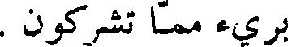
بريء مما تشركون .
File: 000365.gt.txt (if the image is defective, simply delete all Arabic text and the line will be excluded)

وبلغ خبره نمرود ، فأرسل إليه فيها ، ثم جعل إبراهيم يكسر أصنامهم ،
File: 000366.gt.txt (if the image is defective, simply delete all Arabic text and the line will be excluded)

فيقول : ادفعي عن نفسك ، فألهب نمرود نارا ووضعه في منجنيق ورمى به فيها ،
File: 000367.gt.txt (if the image is defective, simply delete all Arabic text and the line will be excluded)

فأوحى الله إليها : أن كوني بردا وسلاما على إبراهيم ، فجلس وسط النار
File: 000368.gt.txt (if the image is defective, simply delete all Arabic text and the line will be excluded)

ما تضره ، فقال نمرود : من اتخذ الها ، فليتخذه مثل اله إبراهيم ، فأمن معه
File: 000369.gt.txt (if the image is defective, simply delete all Arabic text and the line will be excluded)
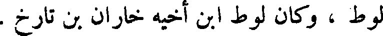
لوط ، وكان لوط ابن أخيه خاران ابن تارخ .
File: 000370.gt.txt (if the image is defective, simply delete all Arabic text and the line will be excluded)

وأمر الله ، عز وجل ، إبراهيم أن يخرج من بلاد نمرود إلى الشأم الأرض
File: 000371.gt.txt (if the image is defective, simply delete all Arabic text and the line will be excluded)

المقدسة ، فخرج إبراهيم وأمرته سارة بنت خاران بن ناحور عمه ، ولوط
File: 000372.gt.txt (if the image is defective, simply delete all Arabic text and the line will be excluded)

ابن خاران ، مهاجرين حيث أمرهم الله ، فنزلوا ارض فلسطين ، وكثر ماله
File: 000373.gt.txt (if the image is defective, simply delete all Arabic text and the line will be excluded)

ومال لوط ، فقال إبراهيم للوط إن الله قد كثر لنا مالنا وماشيتنا ، فانتقل منا
File: 000374.gt.txt (if the image is defective, simply delete all Arabic text and the line will be excluded)

من سبط . . .1 ويعقوب بن زبدي . . .2 ويحيى بن جابر بن فالي من سبط
File: 000375.gt.txt (if the image is defective, simply delete all Arabic text and the line will be excluded)
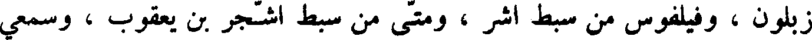
زبلون ، وفيلفوس من سبط اشر ، ومتى من سبط أشجر بن يعقوب ، وسمعي
File: 000376.gt.txt (if the image is defective, simply delete all Arabic text and the line will be excluded)

من سبط هرام بن يعقوب ، ويهودا من سبط يهوذا بن يعقوب ، ويعقوب من سبط
File: 000377.gt.txt (if the image is defective, simply delete all Arabic text and the line will be excluded)
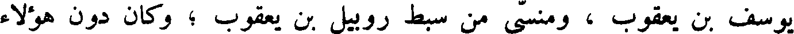
يوسف بن يعقوب ، ومنسى من سبط روبيل بن يعقوب ؛ وكان دون هؤلاء
File: 000378.gt.txt (if the image is defective, simply delete all Arabic text and the line will be excluded)

سبعون رجلا ، وكان الأربعة الذين كتبوا الإنجيل : متى ومرقس ولوقا ويوحنا،
File: 000379.gt.txt (if the image is defective, simply delete all Arabic text and the line will be excluded)

اثنان من هؤلاء ألاثنى عشر ، واثنان من غيرهم .
File: 000380.gt.txt (if the image is defective, simply delete all Arabic text and the line will be excluded)

فأما متى فانه قال في الإنجيل في نسب المسيح ايسوع بن داود بن إبراهيم
File: 000381.gt.txt (if the image is defective, simply delete all Arabic text and the line will be excluded)

إلى اسفل ، حتى انتهى إلى يوسف بن يعقوب بن ماثن بعد اثنين وأربعين أبا ،
File: 000382.gt.txt (if the image is defective, simply delete all Arabic text and the line will be excluded)
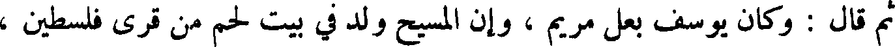
ثم قال وكان يوسف بعل مريم ، وان المسيح ولد في بيت لحم من قرى فلسطين ،
File: 000383.gt.txt (if the image is defective, simply delete all Arabic text and the line will be excluded)

وملك فلسطين يومئذ هيردوس ، وان قوما من المجوس ساروا إلى بيت لحم ،
File: 000384.gt.txt (if the image is defective, simply delete all Arabic text and the line will be excluded)

وعلى رؤوسهم نجم يهتدون به ، حتى رأوه ، فسجدوا له ؛ وان هيرودس ملك
File: 000385.gt.txt (if the image is defective, simply delete all Arabic text and the line will be excluded)

فلسطين أراد أن يقتل المسيح ؛ وان يوسف أخرجه واخرج أمه إلى ارض مصر ،
File: 000386.gt.txt (if the image is defective, simply delete all Arabic text and the line will be excluded)

فلما مات هيرودس رده ، فأنزله ناصرة جبل الجليل ؛ وانه لما كمل المسيح
File: 000387.gt.txt (if the image is defective, simply delete all Arabic text and the line will be excluded)

وبلغ تسعا وعشرين سنة صار إلى يحيى بن زكرياء ليصطنعه ، فقال له يحيى بن
File: 000388.gt.txt (if the image is defective, simply delete all Arabic text and the line will be excluded)

زكرياء : أنا أحوج إليك منك ألي ! فقال له المسيح : اترك هذا القول ، فان
File: 000389.gt.txt (if the image is defective, simply delete all Arabic text and the line will be excluded)
هكذا ينبغي أن يتم البر ، فتركه يحيى ، وان ايسوع خرج بتأييد روح الله إلى
File: 000390.gt.txt (if the image is defective, simply delete all Arabic text and the line will be excluded)

البرية فصام أربعين يوما ، فاقترب إليه الشيطان فقال : إن كنت الآن ابن الله
File: 000391.gt.txt (if the image is defective, simply delete all Arabic text and the line will be excluded)

فمر هذه الحجار أن تصير خبزا ! فقال ايسوع : انه ليس بالخبز وحده يحيا
File: 000392.gt.txt (if the image is defective, simply delete all Arabic text and the line will be excluded)

البشر ، ولكن بكلمة الله ، فحمله ، فصيره على جناح الهيكل ، ثم قال له
File: 000393.gt.txt (if the image is defective, simply delete all Arabic text and the line will be excluded)

الشيطان : فألق نفسك إلى الأرض ، فانك أن كنت ابن الله تكنفتك ملائكته .
File: 000394.gt.txt (if the image is defective, simply delete all Arabic text and the line will be excluded)

فقال المسيح : انه مكتوب : لا تجرب الله بك ؛ ثم قال الشيطان: اذهب فأنا لله اسجد
File: 000395.gt.txt (if the image is defective, simply delete all Arabic text and the line will be excluded)

وإياه اعبد . فتركه الشيطان وذهب، ثم إن ملائكة الله، جل وعز، اقتربت منه ،
File: 000396.gt.txt (if the image is defective, simply delete all Arabic text and the line will be excluded)

فجعلوا يخدمونه ، ثم إن تلامذته اقتربوا إليه ، فجعل يكلمهم بأمثال ووحي ،
File: 000397.gt.txt (if the image is defective, simply delete all Arabic text and the line will be excluded)

ليقبل بقلوب الآباء على أبنائهم ، ويكونوا لله شعبا كاملا .
File: 000398.gt.txt (if the image is defective, simply delete all Arabic text and the line will be excluded)

فقال زكرياء للملك : كيف لي أن اعلم هذا ، وأنا شيخ ، وامرأتي كبيرة
File: 000399.gt.txt (if the image is defective, simply delete all Arabic text and the line will be excluded)

السن فقال له الملك : أني أنا جبريل القائم بين يدي الله ، عز وجل ، أرسلني
File: 000400.gt.txt (if the image is defective, simply delete all Arabic text and the line will be excluded)

لأبشرك بهذا ، فمن الآن ، فكن صامتا لا تتكلم حتى اليوم الذي يكون فيه
File: 000401.gt.txt (if the image is defective, simply delete all Arabic text and the line will be excluded)

هذا لأنك لم تصدق ، ولم تؤمن بقولي الذي يتم في حينه .
File: 000402.gt.txt (if the image is defective, simply delete all Arabic text and the line will be excluded)

وكان الشعب قياما ينتظرون زكرياء ، ويتعجبون من لبثه في الهيكل ، فلما
File: 000403.gt.txt (if the image is defective, simply delete all Arabic text and the line will be excluded)

أن خرج لم يقدر أن يكلمهم ، فعرفوا ، أيقنوا انه أقد رأى رؤيا في الهيكل ،
File: 000404.gt.txt (if the image is defective, simply delete all Arabic text and the line will be excluded)

فكان يومىء إليهم إيماء ، و لا يتكلم .
File: 000405.gt.txt (if the image is defective, simply delete all Arabic text and the line will be excluded)

فلما تمت أيام خدمته انصرف إلى بيته ، وحبلت اليسبع امرأته ، وأقامت
File: 000406.gt.txt (if the image is defective, simply delete all Arabic text and the line will be excluded)

تخفي نفسها اسهرا خمسة ، وتقول : هذا الذي صنع إلي الرب في أيام نظرة
File: 000407.gt.txt (if the image is defective, simply delete all Arabic text and the line will be excluded)

ألي ليمحو عني عاري في البشر .
File: 000408.gt.txt (if the image is defective, simply delete all Arabic text and the line will be excluded)

ولما كان في الشهر السادس من حمل امرأة زكريا أرسل الله جبريل الملك
File: 000409.gt.txt (if the image is defective, simply delete all Arabic text and the line will be excluded)
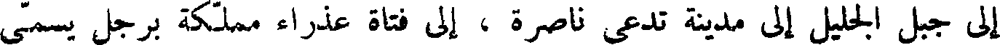
إلى جبل الجليل إلى مدينة تدعى ناصرة ، إلى فتاة عذراء مملكة برجل يسمى
File: 000410.gt.txt (if the image is defective, simply delete all Arabic text and the line will be excluded)

يوسف من آل داود ، اسمها مريم فدخل إليها الملك ، وقال لها : السلام عليك
File: 000411.gt.txt (if the image is defective, simply delete all Arabic text and the line will be excluded)

أيتها المملوءة من النعمة ، أيتها المباركة في النساء ! فلما رأته فزعت من كلامه ،
File: 000412.gt.txt (if the image is defective, simply delete all Arabic text and the line will be excluded)

وجعلت تفكر ، وتقول : ما هذا السلام ؟ فقال لها الملك : لا ترهبي يا مريم !
File: 000413.gt.txt (if the image is defective, simply delete all Arabic text and the line will be excluded)

قد لاقيت ووافيت عند الله نعمة ، بحق انك تقبلين حبلى ، وتلدين ابنا ، وسميه
File: 000414.gt.txt (if the image is defective, simply delete all Arabic text and the line will be excluded)

ايسوع ، ويكون عظيما ، وابن الأعلى يدعى ، ويعطيه الرب إلهه كرسي داود
File: 000415.gt.txt (if the image is defective, simply delete all Arabic text and the line will be excluded)

أبيه ، ويملك على آل يعقوب إلى الدهر ، و لا يكون لملكه فناء ، و لا انقطاع .
File: 000416.gt.txt (if the image is defective, simply delete all Arabic text and the line will be excluded)

فقالت مريم للملك : كيف يكون هذا ، ولم يمسسني رجل ؟ قال لها الملك :
File: 000417.gt.txt (if the image is defective, simply delete all Arabic text and the line will be excluded)

روح القدس يحل عليك، وهذا الذي يولد منك قدوس، وابن الله يدعى ، وهذه
File: 000418.gt.txt (if the image is defective, simply delete all Arabic text and the line will be excluded)

اليسبع نسيبتك ، فهي أيضا حبلى بابن ، على كبرها ، وهذا الشهر هو السادس
File: 000419.gt.txt (if the image is defective, simply delete all Arabic text and the line will be excluded)

لتلك التي تدعى عاقرا ، لأنه لا يعجز الله شيء ! فقالت مريم : أني أمة الله ،
File: 000420.gt.txt (if the image is defective, simply delete all Arabic text and the line will be excluded)

.فليكن لي كما قلت .
File: 000421.gt.txt (if the image is defective, simply delete all Arabic text and the line will be excluded)

بموسى ، ولا نعرف إلا ما في التوراة ، وجحدوا نبوة داود ، وأنكروا البعث
File: 000422.gt.txt (if the image is defective, simply delete all Arabic text and the line will be excluded)

والنشور ، وامتنعوا من مجالسة الناس والاختلاط بهم ؛ ومن تناول شيئا منهم .
File: 000423.gt.txt (if the image is defective, simply delete all Arabic text and the line will be excluded)

ومن حمل الموتى ، ومن حمل ميتا اعتزل سبعة أيام . يعتزل في الصحراء
File: 000424.gt.txt (if the image is defective, simply delete all Arabic text and the line will be excluded)

ولا يختلط بهم ، ثم يغتسل وكذلك من تناول شيء لا يحل له . ولا يؤوون الحائض
File: 000425.gt.txt (if the image is defective, simply delete all Arabic text and the line will be excluded)

منازلهم ؛ وجعلوا رئيسهم من ولد هارون يسمونه الرئيس ، ويتوارثون على
File: 000426.gt.txt (if the image is defective, simply delete all Arabic text and the line will be excluded)

التوراة،فليس هم في بقعة من بقاع الأرض إلا بجند فلسطين ؛ وكان ملك احاز
File: 000427.gt.txt (if the image is defective, simply delete all Arabic text and the line will be excluded)

ست عشرة سنة .
File: 000428.gt.txt (if the image is defective, simply delete all Arabic text and the line will be excluded)
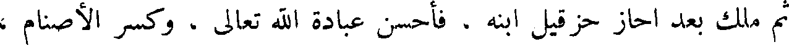
ثم ملك بعد احاز حزقيل ابنه . فاحسن عبادة الله تعالى ، وكسر الأصنام ،
File: 000429.gt.txt (if the image is defective, simply delete all Arabic text and the line will be excluded)

وهدم بيوتها ، وكان في زمانه سنحاريب بن سراطم ملك بابل . فسار إلي بيت
File: 000430.gt.txt (if the image is defective, simply delete all Arabic text and the line will be excluded)

المقدس ، فسبا بقية الأسباط . فرشاه حزقيل بثلاثمائة قنطار فضة ، وثلاثين
File: 000431.gt.txt (if the image is defective, simply delete all Arabic text and the line will be excluded)
قنطار ذهب ، على أن ينصرف ، فأخذها ، ثم غدر ، فلما فعل ذلك دعا الله
File: 000432.gt.txt (if the image is defective, simply delete all Arabic text and the line will be excluded)

اشعيا النبي وحزقيل على سنحاريب ، فأجاب الله دعاءهما ، فسلط الله على
File: 000433.gt.txt (if the image is defective, simply delete all Arabic text and the line will be excluded)

أصحاب سنحاريب القتل ، فقتل منهم في ساعة واحدة مائة ألف وخمسة وثمانين
File: 000434.gt.txt (if the image is defective, simply delete all Arabic text and the line will be excluded)

ألفا ، فرجع سنحاريب مهزوما ، حتى صار إلي بابل ، وقتله ولده شر قتله .
File: 000435.gt.txt (if the image is defective, simply delete all Arabic text and the line will be excluded)
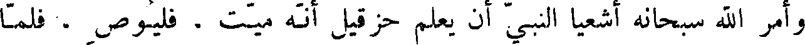
وأمر الله سبحانه اشعيا النبي أن يعلم حزقيل انه ميت . فليوص ، فلما
File: 000436.gt.txt (if the image is defective, simply delete all Arabic text and the line will be excluded)

اعلمه الله ذلك دعا الله أن يزيد في حياته ، حتى يهب له ولدا يملك بعده ، فزاد
File: 000437.gt.txt (if the image is defective, simply delete all Arabic text and the line will be excluded)

الله في حياته خمس عشرة سنة ، حتى ولد له ولد .
File: 000438.gt.txt (if the image is defective, simply delete all Arabic text and the line will be excluded)

وفي أيام حزقيل رجعت الشمس نحو مطلعها خمس درجات ، وكان ملك
File: 000439.gt.txt (if the image is defective, simply delete all Arabic text and the line will be excluded)

حزقيل سبعا وعشرين سنة .
File: 000440.gt.txt (if the image is defective, simply delete all Arabic text and the line will be excluded)

ثم ملك بعد حزقي منشا بن حزقيل ، فكفرت بنو إسرائيل في أيامه ، وكفر ،
File: 000441.gt.txt (if the image is defective, simply delete all Arabic text and the line will be excluded)

وعبد الأصنام ، وكان شر ملك في بني إسرائيل ، وبنى للأصنام مسجدا . واتخذ
File: 000442.gt.txt (if the image is defective, simply delete all Arabic text and the line will be excluded)

صنما له أربعة اوجه ؛ فنهاه اشعيا ، فأمر به فنشر بالمنشار من رأسه إلي رجليه ،
File: 000443.gt.txt (if the image is defective, simply delete all Arabic text and the line will be excluded)

فسلط الله على منشأ قسطنطين ملك الروم ، فحاربه ، وأسره ، فأقام في الأسر
File: 000444.gt.txt (if the image is defective, simply delete all Arabic text and the line will be excluded)

زمانا ، ثم تاب إلي ربه ، فرده الله إلي ملكه ، فكسر الصنم ، وهدم بيوت
File: 000445.gt.txt (if the image is defective, simply delete all Arabic text and the line will be excluded)

على آدم ،
File: 000446.gt.txt (if the image is defective, simply delete all Arabic text and the line will be excluded)

فلم يطاوعه شيء مما خلق الله جل وعز إلا الجنة ، فلما رأى آدم ما في الجنة
File: 000447.gt.txt (if the image is defective, simply delete all Arabic text and the line will be excluded)

من النعيم قال : لو كان سبيل إلى الخلود ؟ فطمع فيه إبليس لما سمع ذلك منه ،
File: 000448.gt.txt (if the image is defective, simply delete all Arabic text and the line will be excluded)

فبكى ونظر إليه آدم وحواء يبكي ، فقالا له : ما يبكيك ؟ قال : لأنكما
File: 000449.gt.txt (if the image is defective, simply delete all Arabic text and the line will be excluded)

تفارقان هذا ، وما نهاكما ربكما عن هذه الشجرة ، إلا أن تكونا ملكين ،
File: 000450.gt.txt (if the image is defective, simply delete all Arabic text and the line will be excluded)
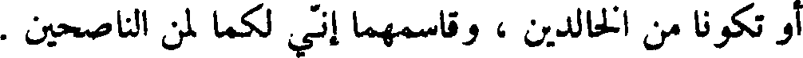
أو تكونا من الخالدين ، وقاسمهما أني لكما لمن الناصحين .
File: 000451.gt.txt (if the image is defective, simply delete all Arabic text and the line will be excluded)

وكان لباس آدم وحواء ثيابا من نور ، فلما ذاقا من الشجرة ، بدت لهما
File: 000452.gt.txt (if the image is defective, simply delete all Arabic text and the line will be excluded)

سوآتهما ، فزعم أهل الكتاب أن مكث آدم في الأرض ، قبل أن يدخل الجنة ،
File: 000453.gt.txt (if the image is defective, simply delete all Arabic text and the line will be excluded)

كان ثلاث ساعات ، ومكث هو وحواء في النعيم والكرامة ، قبل أن يأكلا من
File: 000454.gt.txt (if the image is defective, simply delete all Arabic text and the line will be excluded)

الشجرة فتبدو لهما سوآتهما ، ثلاث ساعات ، فلما بدت لآدم سوأته أخذ ورقة
File: 000455.gt.txt (if the image is defective, simply delete all Arabic text and the line will be excluded)

من الشجرة ، فوضعها على نفسه ، ثم صاح : ها أنا يا رب عريان قد أكلت من
File: 000456.gt.txt (if the image is defective, simply delete all Arabic text and the line will be excluded)

الشجرة التي نهيتني عنها ، فقال الله : ارجع إلى الأرض التي منها خلقت ،
File: 000457.gt.txt (if the image is defective, simply delete all Arabic text and the line will be excluded)

فأني مسخر لك ولولدك طير السماء ، ونون البحار .
File: 000458.gt.txt (if the image is defective, simply delete all Arabic text and the line will be excluded)

وأخرج الله آدم وحواء مما كانا فيه ، فيما يقول أهل الكتاب ، في تسع
File: 000459.gt.txt (if the image is defective, simply delete all Arabic text and the line will be excluded)
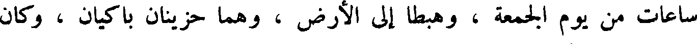
ساعات من يوم الجمعة ، وهبطا إلى الأرض ، وهما حزينان باكيان ، وكان
File: 000460.gt.txt (if the image is defective, simply delete all Arabic text and the line will be excluded)

هبوطهما على أدنى جبل من جبال الأرض إلى الجنة ، وكان ببلاد الهند ، وقال
File: 000461.gt.txt (if the image is defective, simply delete all Arabic text and the line will be excluded)
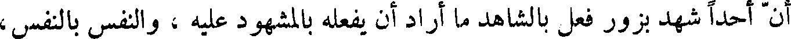
أن أحدا شهد بزور فعل بالشاهد ما أراد أن يفعله بالمشهود عليه ، والنفس بالنفس ،
File: 000462.gt.txt (if the image is defective, simply delete all Arabic text and the line will be excluded)
والعين بالعين ، واليد باليد ، الرجل بالرجل .
File: 000463.gt.txt (if the image is defective, simply delete all Arabic text and the line will be excluded)

وإذا أردتم قتال قوم فأتيتهم قريتهم ، فادعوهم إلى السلم ، فإن أجابوكم ،
File: 000464.gt.txt (if the image is defective, simply delete all Arabic text and the line will be excluded)
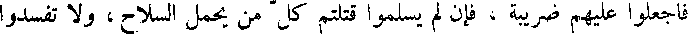
فاجعلوا عليهم ضريبة ، فإن لم يسلموا قتلتم كل من يحمل السلاح ، و لا تفسدوا
File: 000465.gt.txt (if the image is defective, simply delete all Arabic text and the line will be excluded)
شجرها .
File: 000466.gt.txt (if the image is defective, simply delete all Arabic text and the line will be excluded)

وقال الله عز وجل لموسى : إذا خرجت لقتال عدوك ، فأمكنك الله منهم ،
File: 000467.gt.txt (if the image is defective, simply delete all Arabic text and the line will be excluded)

فرأيت في السبي امرأة ، وأحببت أن تتخذها لنفسك ، فأدخلها إلى بيتك ،
File: 000468.gt.txt (if the image is defective, simply delete all Arabic text and the line will be excluded)

واكشف عن رأسها ، وقص أظفارها ، وانزع عنها ثيابها التي سبيت فيها ،
File: 000469.gt.txt (if the image is defective, simply delete all Arabic text and the line will be excluded)

وأقعدها في بيتك ثلاثة اشهر تبكي على أبيها وأمها ، ثم استحلها ، فإن كرهتها
File: 000470.gt.txt (if the image is defective, simply delete all Arabic text and the line will be excluded)

بعد أن تمسها ، فأخرجها ، ولا تبعها ، و لا تأخذ لها ثمنا بعد أن وقعت عليها .
File: 000471.gt.txt (if the image is defective, simply delete all Arabic text and the line will be excluded)

وأيما ابن عصى أباه ، ولم يطعه ، ولم يقبل أمره ، فليخرجه أبوه إلى
File: 000472.gt.txt (if the image is defective, simply delete all Arabic text and the line will be excluded)

شيوخ سبعة ، فيرجموه حتى يذهب الشر والفظيعة منكم ، ويحذر أمثاله من
File: 000473.gt.txt (if the image is defective, simply delete all Arabic text and the line will be excluded)

بني إسرائيل .
File: 000474.gt.txt (if the image is defective, simply delete all Arabic text and the line will be excluded)

وإذا وجد أحدا منكم ضالة قد ضلت من صاحبها من نعجة ، أو ثور ،
File: 000475.gt.txt (if the image is defective, simply delete all Arabic text and the line will be excluded)

أو حمار ، فليردها على صاحبها ، فإن لم يجده ، فليحبسها في بيته حتى يحضر
File: 000476.gt.txt (if the image is defective, simply delete all Arabic text and the line will be excluded)

صاحبها .
File: 000477.gt.txt (if the image is defective, simply delete all Arabic text and the line will be excluded)
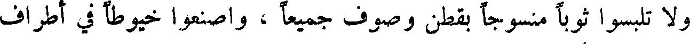
و لا تلبسوا ثوبا منسوجا بقطن وصوف جميعا ، واصنعوا خيوطا في أطراف
File: 000478.gt.txt (if the image is defective, simply delete all Arabic text and the line will be excluded)

أكسيتكم .
File: 000479.gt.txt (if the image is defective, simply delete all Arabic text and the line will be excluded)

وأيما رجل قذف امرأته ورماها بفجور ، فلم يصح عليها ، فليغرم مائة
File: 000480.gt.txt (if the image is defective, simply delete all Arabic text and the line will be excluded)

درهم ، وتكون امرأته آخر الدهر ، وان كان ما قذفها به حقا ، فلترجم .
File: 000481.gt.txt (if the image is defective, simply delete all Arabic text and the line will be excluded)

وأيما رجل وجد يزني بامرأة لها زوج ، فليقتلا كلاهما .
File: 000482.gt.txt (if the image is defective, simply delete all Arabic text and the line will be excluded)

وأيما رجل غلب امرأة على نفسها ، فليقتل الرجل ، وأي رجل وقع على
File: 000483.gt.txt (if the image is defective, simply delete all Arabic text and the line will be excluded)

جارية تكون في حجر أبيها ، فافتضها ،وأحبها .فليعط إباها خمسين مثقالا
File: 000484.gt.txt (if the image is defective, simply delete all Arabic text and the line will be excluded)

فضة ، ولتكن امرأته آخر الدهر ، و لا يخل سبيلها .
File: 000485.gt.txt (if the image is defective, simply delete all Arabic text and the line will be excluded)

وقتلت أعداءك . فقال ناتان النبي لداود ، فعظم في قلب داود ، ويقال :
File: 000486.gt.txt (if the image is defective, simply delete all Arabic text and the line will be excluded)

أن ناتان ان ابن داود .
File: 000487.gt.txt (if the image is defective, simply delete all Arabic text and the line will be excluded)

وقاتل داود الحنفاء فهزمهم ، وقاتل أهل مؤاب وهزمهم ، وقاتل اددازار
File: 000488.gt.txt (if the image is defective, simply delete all Arabic text and the line will be excluded)

ملك سوبا فهزمه ، واخذ له ألف مركب وسبعة آلاف من الخيل .
File: 000489.gt.txt (if the image is defective, simply delete all Arabic text and the line will be excluded)

واجتمع أهل الشأم ودمشق مع اددازار ليقاتلوا داود ، فقتل منهم اثنين
File: 000490.gt.txt (if the image is defective, simply delete all Arabic text and the line will be excluded)
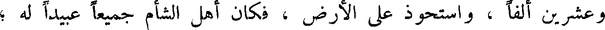
وعشرين ألفا ، واستحوذ على الأرض ، فكان أهل الشام جميعا عبيد له ؛
File: 000491.gt.txt (if the image is defective, simply delete all Arabic text and the line will be excluded)

ثم اجتمعوا جميعا على محاربة داود ، فوجه إليهم يؤاب ابن أخته ، وايبشا
File: 000492.gt.txt (if the image is defective, simply delete all Arabic text and the line will be excluded)

أخاه ، ثم خرج داود حتى عبر نهر الأردن ، فقتل من القوم أربعين ألفا ، وقتل
File: 000493.gt.txt (if the image is defective, simply delete all Arabic text and the line will be excluded)

اشان رأس القوم ؛ ثم وجه يؤاب ابن أخته لقتال بني عمون إلى اسافل الشأم ،
File: 000494.gt.txt (if the image is defective, simply delete all Arabic text and the line will be excluded)

ورجع إلى بيت المقدس ، فقام يمشي على سطح له إذ نظر إلى برسبا بنت اليات ،
File: 000495.gt.txt (if the image is defective, simply delete all Arabic text and the line will be excluded)

امرأة اوريا بن حنان الشطي ، فسأل عنها ، فأخبر بحالها ، وإنها امرأة اوريا بن
File: 000496.gt.txt (if the image is defective, simply delete all Arabic text and the line will be excluded)

وأرسل داود إلى امرأته ، فتزوجها وأحبلها ، فأرسل الله إليه الملكين ،
File: 000497.gt.txt (if the image is defective, simply delete all Arabic text and the line will be excluded)

على ما قص في كتابه جل وعز ؛ وأرسل إليه ناتان النبي فقال له : يا داود،
File: 000498.gt.txt (if the image is defective, simply delete all Arabic text and the line will be excluded)

ألم يأمرك الله أن تعدل في القضاء ، وتحكم بالحق ، و لاتتبع الهوى ؟ قال : بلى !
File: 000499.gt.txt (if the image is defective, simply delete all Arabic text and the line will be excluded)

قال : فهذان رجلان يسكنان مدينة واحدة أحدهما غني والآخر فقير ، وكان